library(tidyverse)
library(mosaic)
library(skimr)
library(ggformula)
A <- read_csv("data/panel-A.csv")
B <- read_csv("data/panel-B.csv")
Panel_C <- read_csv("data/panel-C.csv")Group 2 - Risk factors
Studio wall
Spine
How do bodies carry risk, how do class and smoke talk, and where do children still die young?
Introduction - the tables we own
This folder is ours for the ten days. Three tables, three shapes.
- Panel A (
panel-A.csv) -cardioRiskFactors: BMI, lipids, blood pressure, uric acid.sexandsmokhave already been recoded from integers to factors. - Panel B (
panel-B.csv) - Scottish Health Survey 1998: sex, social class, smoking, diagnosed CVD.areais a code, not a map. - Panel C (
panel-C.csv) - SOWC child / infant / neonatal mortality by country. Join by country name.
If a brick needs a histogram, it lives in A. If it needs a mosaic, it lives in B.
Panel A - body / measure
bmi, choles, sys, dia, Uric are Quant. Do not average
smok.
1. See the table
# glimpse() / inspect() / skim()
dplyr::glimpse(A)Rows: 998
Columns: 14
$ age <dbl> 52, 54, 61, 51, 58, 62, 54, 52, 45, 55, 39, 57, 31, 50, 50, 4…
$ bmi <dbl> 36.9, 30.7, 32.2, 36.6, 31.4, 42.3, 26.7, 27.0, 34.0, 20.9, 2…
$ waisthip <dbl> 0.8000000, 0.8256881, 0.8653846, 0.9166667, 0.8269231, 0.9391…
$ smok <chr> "non_smoker", "non_smoker", "non_smoker", "non_smoker", "non_…
$ choles <dbl> 7.4, 7.9, 7.0, 5.7, 8.7, 8.1, 6.5, 7.7, 7.4, 6.7, 7.4, 5.5, 4…
$ trig <dbl> 3.44, 2.24, 1.75, 2.10, 2.26, 1.97, 2.64, 2.07, 2.63, 2.99, 3…
$ hdl <dbl> 1.25, 1.46, 1.28, 1.07, 0.80, 1.02, 1.66, 1.18, 0.84, 1.11, 1…
$ ldl <dbl> 4.59, 5.42, 4.92, 3.68, 6.87, 6.18, 3.64, 5.58, 5.36, 4.23, 4…
$ sys <dbl> 154, 135, 154, 180, 154, 116, 168, 156, 141, 156, 141, 135, 1…
$ dia <dbl> 89.0, 81.0, 93.0, 112.0, 104.0, 85.0, 105.0, 104.0, 77.0, 96.…
$ Uric <dbl> 437, 361, 268, 335, 549, 315, 903, 691, 304, 607, 366, 482, 2…
$ sex <chr> "female", "female", "female", "female", "female", "female", "…
$ alco <dbl> 0.00000, 0.00000, 0.00000, 0.00000, 0.00000, 0.00000, 208.285…
$ apoa <dbl> 1.47, 1.18, 1.32, 1.07, 1.14, 1.08, 1.41, 1.19, 0.85, 1.27, 1…Our Panel-A data has:
- 998 observations and 14 variables. One case = one person, measured once.
age: Quantitative, numericbmi: Quantitative, numericwaisthip: Quantitative, numericsmok: Qualitative, categorical. Encoded<chr>, to be mutatedcholes: Quantitative, numerictrig: Quantitative, numerichdl: Quantitative, numericldl: Quantitative, numericsys: Quantitative, numericdia: Quantitative, numericUric: Quantitative, numericsex: Qualitative, categorical. Encoded<chr>, to be mutatedalco: Quantitative, numericapoa: Quantitative, numeric
A |> slice(1)# A tibble: 1 × 14
age bmi waisthip smok choles trig hdl ldl sys dia Uric sex
<dbl> <dbl> <dbl> <chr> <dbl> <dbl> <dbl> <dbl> <dbl> <dbl> <dbl> <chr>
1 52 36.9 0.8 non_smo… 7.40 3.44 1.25 4.59 154 89 437 fema…
# ℹ 2 more variables: alco <dbl>, apoa <dbl>Row 1 is one person: a 52-year-old woman who doesn’t smoke or drink, with a BMI of 36.9 and blood pressure of 154/89.
# glimpse() / inspect() / skim()
skimr::skim(A)| Name | A |
| Number of rows | 998 |
| Number of columns | 14 |
| _______________________ | |
| Column type frequency: | |
| character | 2 |
| numeric | 12 |
| ________________________ | |
| Group variables | None |
Variable type: character
| skim_variable | n_missing | complete_rate | min | max | empty | n_unique | whitespace |
|---|---|---|---|---|---|---|---|
| smok | 0 | 1 | 6 | 10 | 0 | 2 | 0 |
| sex | 0 | 1 | 4 | 6 | 0 | 2 | 0 |
Variable type: numeric
| skim_variable | n_missing | complete_rate | mean | sd | p0 | p25 | p50 | p75 | p100 | hist |
|---|---|---|---|---|---|---|---|---|---|---|
| age | 0 | 1 | 44.57 | 11.47 | 25.00 | 35.00 | 45.00 | 54.00 | 64.00 | ▇▇▇▇▇ |
| bmi | 0 | 1 | 25.75 | 5.31 | 14.80 | 21.80 | 25.10 | 29.00 | 48.60 | ▃▇▃▁▁ |
| waisthip | 0 | 1 | 0.83 | 0.07 | 0.47 | 0.79 | 0.83 | 0.88 | 1.21 | ▁▂▇▂▁ |
| choles | 0 | 1 | 5.58 | 1.25 | 2.50 | 4.70 | 5.50 | 6.40 | 11.00 | ▂▇▆▁▁ |
| trig | 0 | 1 | 1.29 | 0.88 | 0.28 | 0.75 | 1.03 | 1.56 | 7.98 | ▇▂▁▁▁ |
| hdl | 0 | 1 | 1.54 | 0.45 | 0.48 | 1.22 | 1.48 | 1.81 | 3.79 | ▂▇▃▁▁ |
| ldl | 0 | 1 | 3.45 | 1.22 | 0.63 | 2.61 | 3.42 | 4.21 | 9.49 | ▃▇▃▁▁ |
| sys | 0 | 1 | 135.91 | 23.90 | 90.00 | 119.00 | 132.00 | 150.00 | 245.00 | ▅▇▃▁▁ |
| dia | 0 | 1 | 88.00 | 14.15 | 59.00 | 78.25 | 87.00 | 97.00 | 172.00 | ▆▇▂▁▁ |
| Uric | 0 | 1 | 330.10 | 139.33 | 99.00 | 239.25 | 298.00 | 388.00 | 1885.00 | ▇▁▁▁▁ |
| alco | 0 | 1 | 30.32 | 78.16 | 0.00 | 0.00 | 0.00 | 16.01 | 672.11 | ▇▁▁▁▁ |
| apoa | 0 | 1 | 1.25 | 0.26 | 0.63 | 1.08 | 1.22 | 1.40 | 2.24 | ▂▇▆▂▁ |
On the Qual variables, panel-A data has:
sexhas 2 levels: “female” (524) and “male” (474)smokhas 2 levels: “non_smoker” (775) and “smoker” (223)- The split inside
sexis very uneven: only 36 women smoke (vs 488 who don’t), while 187 men smoke (vs 287 who don’t)
mosaic::tally(~ sex, data = A)sex
female male
524 474 mosaic::tally(~ smok, data = A)smok
non_smoker smoker
775 223 mosaic::tally(smok ~ sex, data = A) # counts of smok inside each sex sex
smok female male
non_smoker 488 287
smoker 36 187On the Quant variables, panel-A data has:
age: mean 44.6, sd 11.5, median 45, min 25, max 64. Pretty flat, no skew.bmi: mean 25.8, sd 5.3, median 25.1, min 14.8, max 48.6. Skewed right.hdl: mean 1.54, sd 0.45, median 1.48. Slightly skewed right.ldl: mean 3.45, sd 1.22, median 3.42. Close to symmetric.sys: mean 135.9, sd 23.9, median 132, max 245. Skewed right.Uric,trig,alco: very skewed right with a long tail (Uricgoes up to 1885).alco: 721 of 998 people have 0, so most people don’t drink at all.
There is no missing data.
A_mod <- A |> mutate(sex = as.factor(sex), smok = as.factor(smok))
glimpse(A_mod)Rows: 998
Columns: 14
$ age <dbl> 52, 54, 61, 51, 58, 62, 54, 52, 45, 55, 39, 57, 31, 50, 50, 4…
$ bmi <dbl> 36.9, 30.7, 32.2, 36.6, 31.4, 42.3, 26.7, 27.0, 34.0, 20.9, 2…
$ waisthip <dbl> 0.8000000, 0.8256881, 0.8653846, 0.9166667, 0.8269231, 0.9391…
$ smok <fct> non_smoker, non_smoker, non_smoker, non_smoker, non_smoker, n…
$ choles <dbl> 7.4, 7.9, 7.0, 5.7, 8.7, 8.1, 6.5, 7.7, 7.4, 6.7, 7.4, 5.5, 4…
$ trig <dbl> 3.44, 2.24, 1.75, 2.10, 2.26, 1.97, 2.64, 2.07, 2.63, 2.99, 3…
$ hdl <dbl> 1.25, 1.46, 1.28, 1.07, 0.80, 1.02, 1.66, 1.18, 0.84, 1.11, 1…
$ ldl <dbl> 4.59, 5.42, 4.92, 3.68, 6.87, 6.18, 3.64, 5.58, 5.36, 4.23, 4…
$ sys <dbl> 154, 135, 154, 180, 154, 116, 168, 156, 141, 156, 141, 135, 1…
$ dia <dbl> 89.0, 81.0, 93.0, 112.0, 104.0, 85.0, 105.0, 104.0, 77.0, 96.…
$ Uric <dbl> 437, 361, 268, 335, 549, 315, 903, 691, 304, 607, 366, 482, 2…
$ sex <fct> female, female, female, female, female, female, male, male, f…
$ alco <dbl> 0.00000, 0.00000, 0.00000, 0.00000, 0.00000, 0.00000, 208.285…
$ apoa <dbl> 1.47, 1.18, 1.32, 1.07, 1.14, 1.08, 1.41, 1.19, 0.85, 1.27, 1…A few helper columns for later bricks. These are cut-offs we chose, not columns in the data: “high bp” is sys >= 140 or dia >= 90, “obese” is bmi >= 30, “drinker” is alco > 0.
A_flag <- A_mod |>
mutate(
high_bp = (sys >= 140 | dia >= 90),
obese = (bmi >= 30),
drinker = (alco > 0)
)
A_flag |> summarise(
pct_high_bp = mean(high_bp),
pct_obese = mean(obese),
n_nondrinkers = sum(!drinker)
)# A tibble: 1 × 3
pct_high_bp pct_obese n_nondrinkers
<dbl> <dbl> <int>
1 0.484 0.197 721Findings from this look:
- 524 women and 474 men; 775 non-smokers and 223 smokers (only 36 women smoke, compared to 187 men).
- Most people don’t drink: 721 of 998.
- 48% of people have high blood pressure.
- 20% of people are obese (
bmi >= 30).
2. Ask
Based on the spine, these are our questions:
Possibly can answer:
- Are women and men affected differently? Do they carry risk in different ways?
- Is
waisthipa better match for risk markers thanbmi? (Where you carry weight vs how much.) - Do smokers and non-smokers have different
hdlandldllevels, for men and for women? Is the pattern still there for non-drinkers? (Main Character Question)
Possibly cannot answer:
- How much smoking matters. (No dose or duration of smoking, just smoker / non-smoker.)
- Did any of these people get heart disease? (No outcome column, so we can’t tell whether a “high” value actually leads to heart disease.)
3. Choose a mark
- Bar chart for the Qual counts (
sex,smok), no histograms for these. - Histograms for single Quant variables (
age,bmi,sys,alco, …) - Scatter + straight-line smoother for Quant + Quant (
sys ~ age,sys ~ waisthip,sys ~ bmi,hdl ~ trig,hdl ~ alco), with a correlation number to back it up - Violins for Quant + Qual (2 levels): body measures by
sex, andhdl/ldlbysmok, split bysex - Density plot to see
hdlandldlside by side in one chart - Two-sample test for means beside the matching violin
4. Predict
- Question 1: Men will carry more weight around the middle (
waisthip), even if women have the higherbmi. - Question 2:
waisthipwill line up with blood pressure and uric acid more closely thanbmidoes. - Question 3 (Main Character): Smokers will have worse cholesterol: lower
hdland higherldlthan non-smokers.
5. Make
These are the charts we used to explore the data. They don’t show up in the render, but they helped us decide what to look at next.
## Qual counts
A_mod |> gf_bar(~ sex)
A_mod |> gf_bar(~ smok)
A_mod |> gf_bar(~ smok, fill = ~ sex)
## Quant shapes
A_mod |> gf_histogram(~ age)
A_mod |> gf_histogram(~ bmi)
A_mod |> gf_histogram(~ sys)
A_mod |> gf_histogram(~ Uric)
A_mod |> gf_histogram(~ alco)Question 1: do women and men carry risk differently?
A_mod |> gf_violin(bmi ~ sex, fill = ~ sex) |>
gf_labs(title = "Women have the higher BMI...", x = NULL)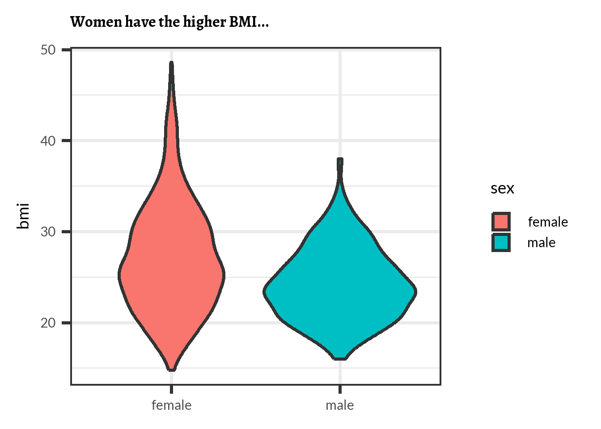
A_mod |> gf_violin(waisthip ~ sex, fill = ~ sex) |>
gf_labs(title = "...but men carry more weight around the middle", x = NULL)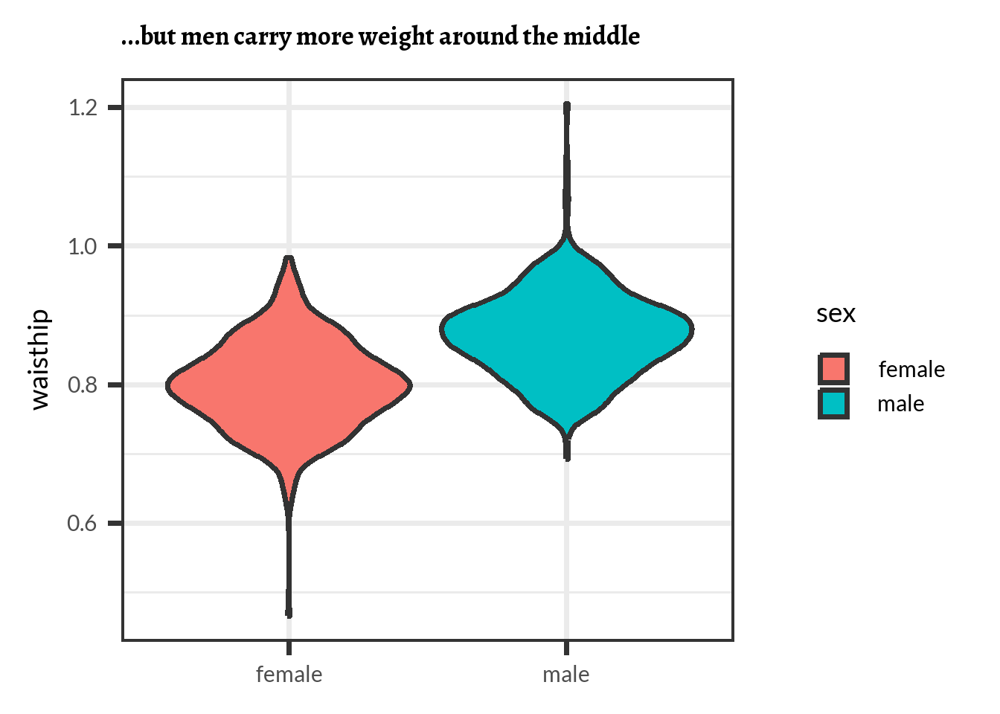
A_mod |> gf_violin(sys ~ sex, fill = ~ sex) |>
gf_labs(title = "Men have higher blood pressure", x = NULL, y = "Systolic BP (mmHg)")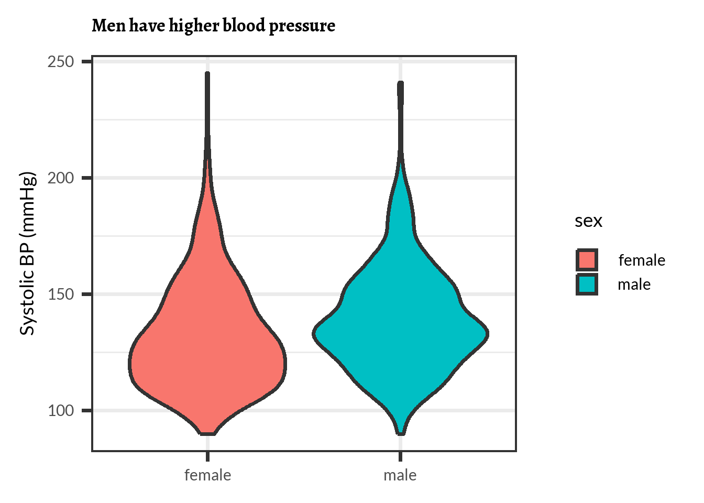
A_mod |> gf_violin(Uric ~ sex, fill = ~ sex) |>
gf_labs(title = "Men have much higher uric acid", x = NULL, y = "Uric acid")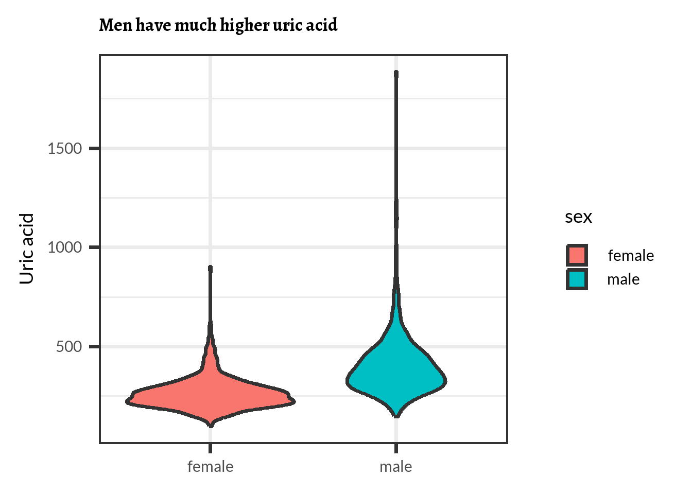
Prediction was right: women have higher bmi, men have higher waisthip, blood pressure and Uric.
Blood pressure rises with age:
A_mod |> gf_point(sys ~ age) |> gf_smooth(method = "lm") |>
gf_labs(title = "Blood pressure goes up with age", y = "Systolic BP (mmHg)")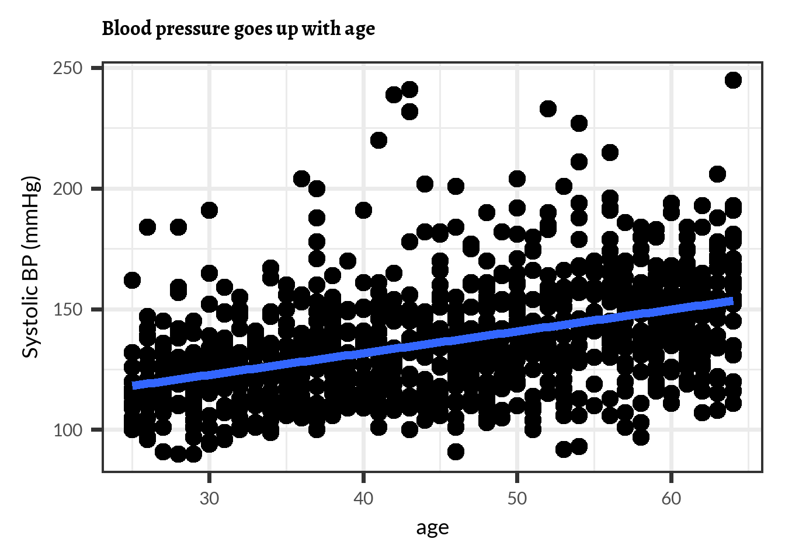
Question 2: where you carry weight (waisthip) vs how much (bmi)
A_mod |> gf_point(sys ~ waisthip) |> gf_smooth(method = "lm")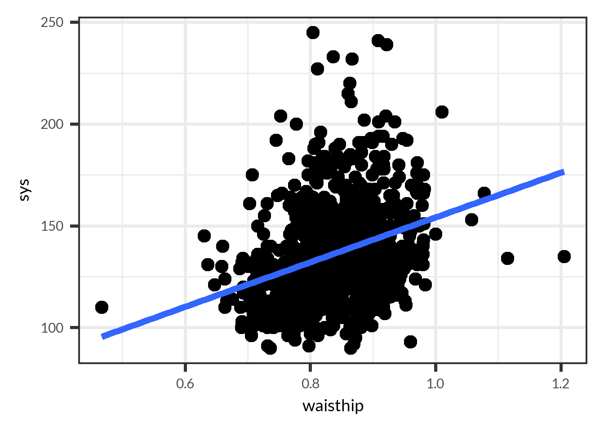
A_mod |> gf_point(sys ~ bmi) |> gf_smooth(method = "lm")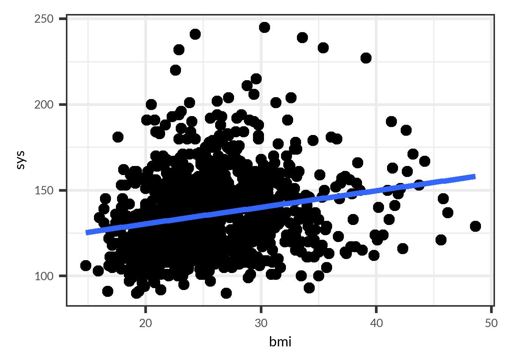
A_mod |> gf_point(Uric ~ waisthip) |> gf_smooth(method = "lm")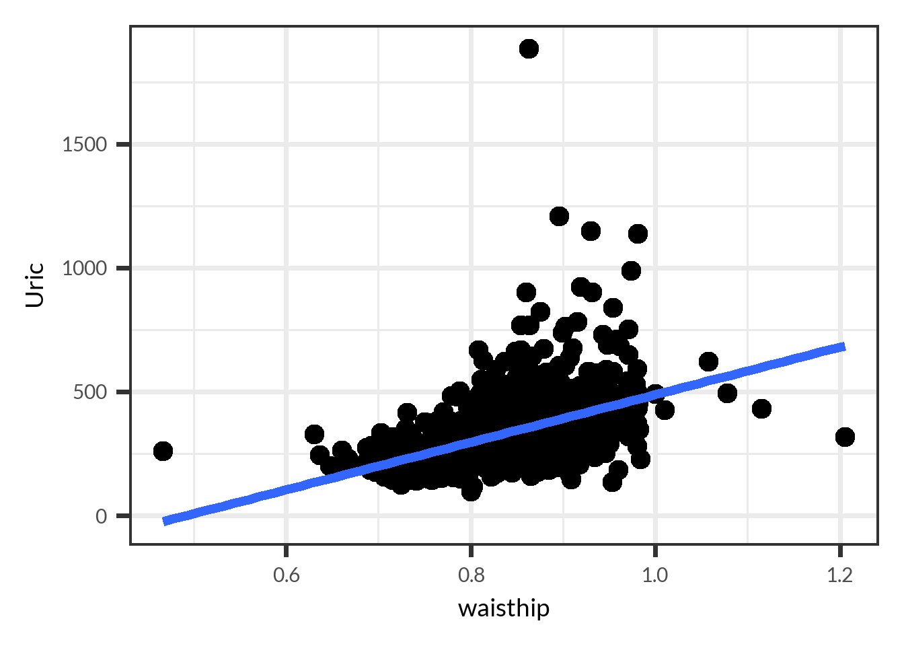
A_mod |> gf_point(Uric ~ bmi) |> gf_smooth(method = "lm")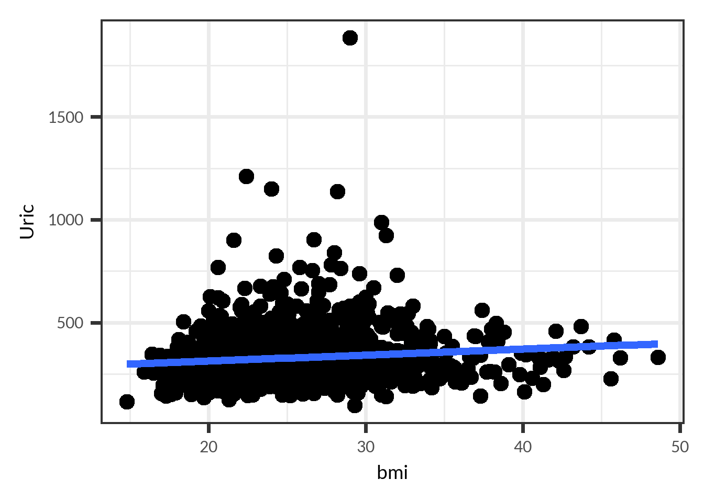
A_mod |> gf_point(trig ~ waisthip) |> gf_smooth(method = "lm")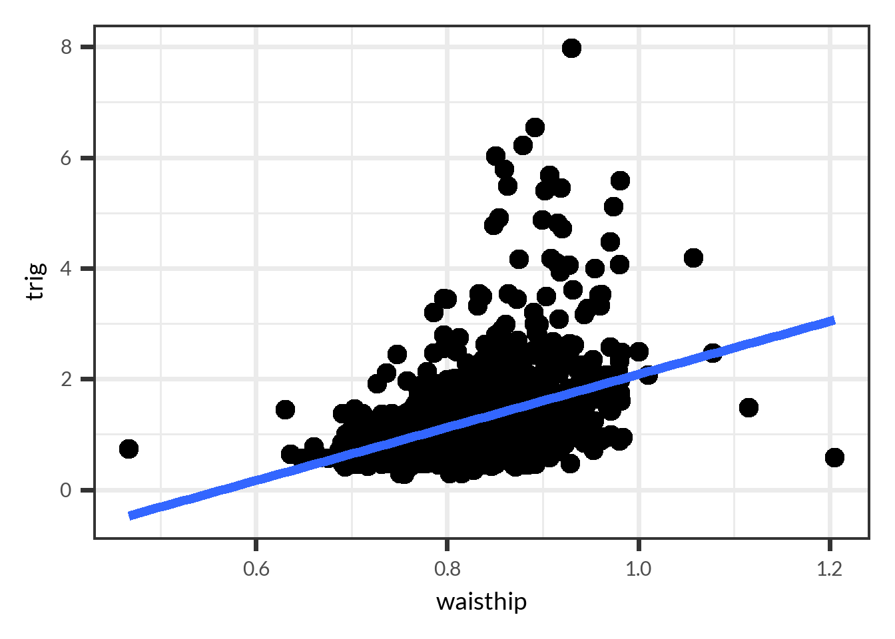
A_mod |> gf_point(trig ~ bmi) |> gf_smooth(method = "lm")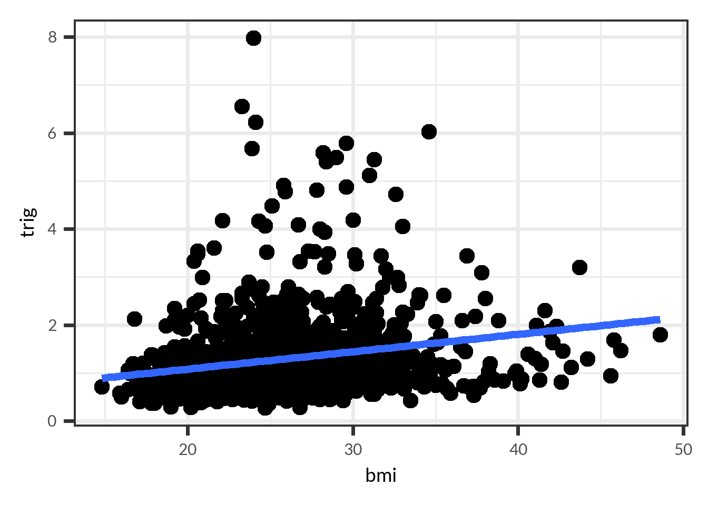
# put numbers on it
cor(sys ~ waisthip, data = A_mod)[1] 0.3270939cor(sys ~ bmi, data = A_mod)[1] 0.2147511cor(Uric ~ waisthip, data = A_mod)[1] 0.4902608cor(Uric ~ bmi, data = A_mod)[1] 0.1108893cor(trig ~ waisthip, data = A_mod)[1] 0.3892571cor(trig ~ bmi, data = A_mod)[1] 0.2192494waisthip wins every time: sys 0.33 vs 0.21, Uric 0.49 vs 0.11, trig 0.39 vs 0.22.
More triglycerides, less HDL:
A_mod |> gf_point(hdl ~ trig) |> gf_smooth(method = "lm") |>
gf_labs(title = "More triglycerides, less good cholesterol")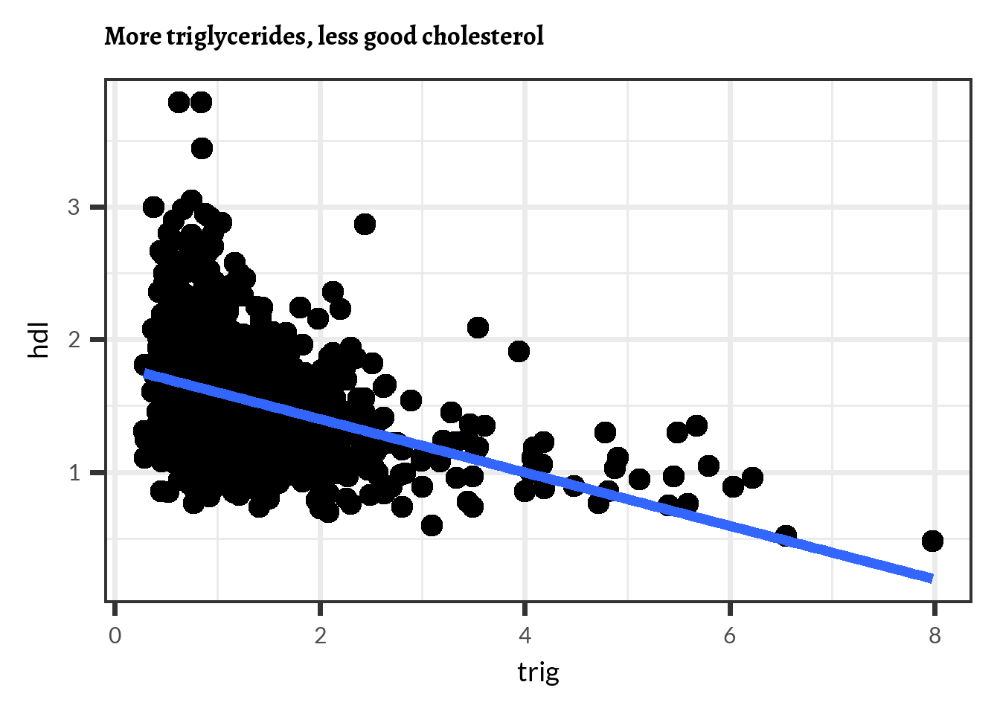
Drinkers have higher uric acid:
A_flag |> gf_violin(Uric ~ drinker, fill = ~ drinker) |>
gf_labs(title = "Drinkers have higher uric acid", x = "Drinks alcohol?")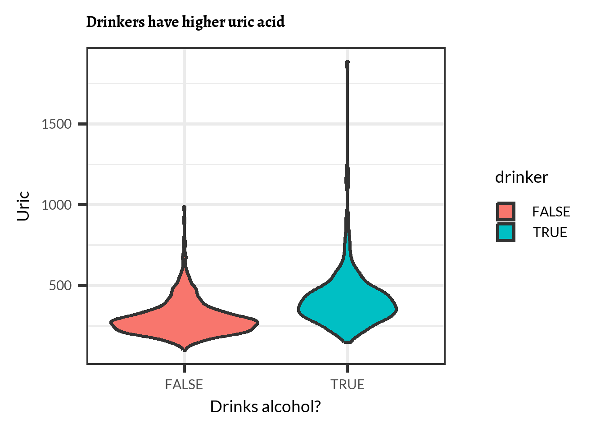
A_flag |> group_by(drinker) |> summarise(mean_Uric = mean(Uric), n = n())# A tibble: 2 × 3
drinker mean_Uric n
<lgl> <dbl> <int>
1 FALSE 298. 721
2 TRUE 414. 277Question 3 (Main Character): smokers and cholesterol, men and women separately
Human brick first: our own starting chart, before any AI.
# Our first attempt: HDL and LDL as two separate graphs
A_mod |> gf_histogram(~ hdl, fill = ~ smok, position = "dodge", bins = 25) |> gf_facet_wrap(~ factor(sex))
A_mod |> gf_histogram(~ ldl, fill = ~ smok, position = "dodge", bins = 25) |> gf_facet_wrap(~ factor(sex))Problem: two separate graphs, so it’s hard to compare HDL and LDL side by side.
# ## Prompt we actually used
# "how can I plot these 2 graphs together so I can analyse both hdl and ldl side by side"
# ai_draft
A_mod |>
pivot_longer(c(hdl, ldl), names_to = "cholesterol", values_to = "level") |>
gf_density(~ level, fill = ~ smok, alpha = 0.5) |>
gf_facet_grid(cholesterol ~ factor(sex))
# ours
# kept pivot_longer() + gf_facet_grid(), tried it as a histogram first,
# switched to density because the groups are really uneven (36 vs 488 women),
# added a title + captionA_mod |>
pivot_longer(c(hdl, ldl), names_to = "cholesterol", values_to = "level") |>
gf_density(~ level, fill = ~ smok, alpha = 0.5) |>
gf_facet_grid(cholesterol ~ sex) |>
gf_labs(
title = "Male smokers have more good cholesterol and less bad; women barely differ",
caption = "Panel A, cardioRiskFactors (n = 998). Only 36 women smoke.",
x = "Cholesterol (mmol/L)"
)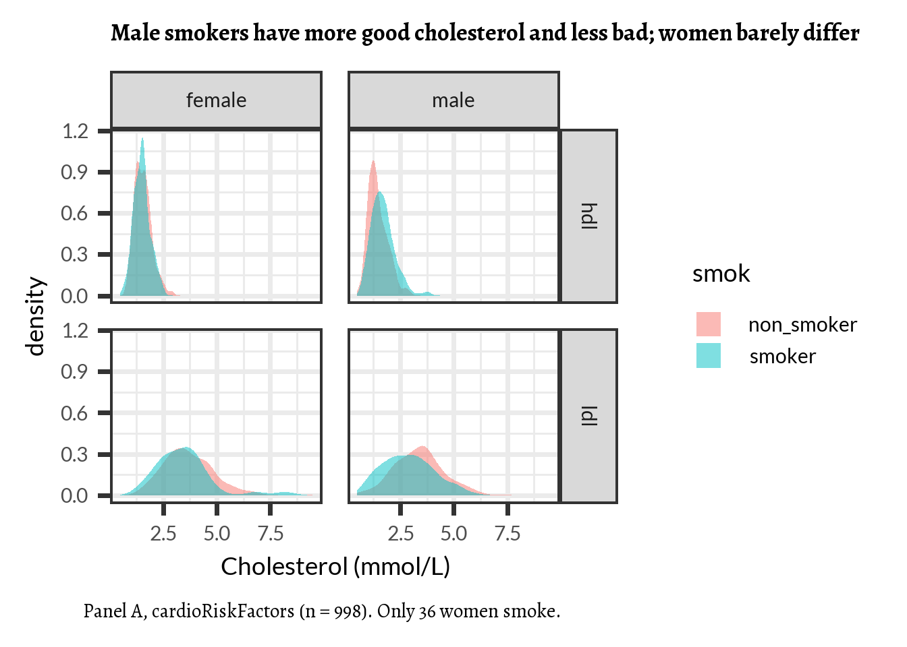
The same comparison as violins, with the group means:
A_mod |> gf_violin(hdl ~ smok, fill = ~ smok) |> gf_facet_grid(~ sex) |>
gf_labs(title = "Male smokers have higher good cholesterol (HDL)", x = NULL,
caption = "Only 36 women smoke, so the female smoker violin is thin on data.")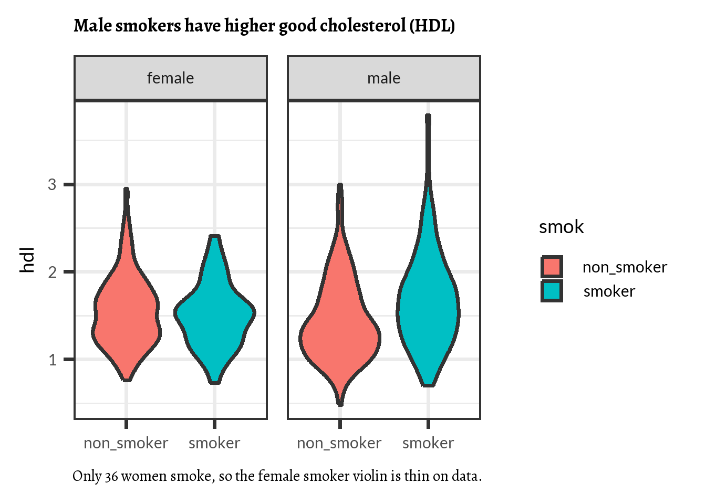
A_mod |> gf_violin(ldl ~ smok, fill = ~ smok) |> gf_facet_grid(~ sex) |>
gf_labs(title = "Male smokers have lower bad cholesterol (LDL)", x = NULL)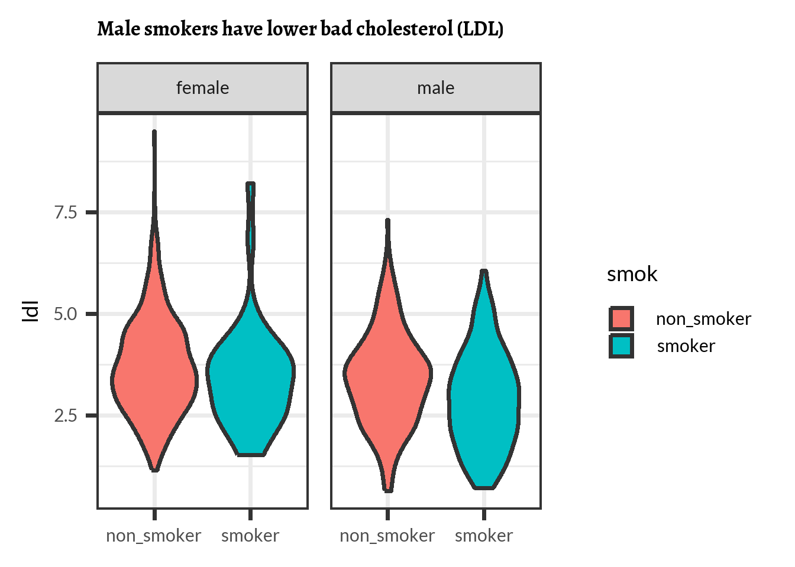
A_mod |> group_by(sex, smok) |>
summarise(n = n(), mean_hdl = mean(hdl), mean_ldl = mean(ldl), .groups = "drop")# A tibble: 4 × 5
sex smok n mean_hdl mean_ldl
<fct> <fct> <int> <dbl> <dbl>
1 female non_smoker 488 1.55 3.70
2 female smoker 36 1.51 3.46
3 male non_smoker 287 1.45 3.39
4 male smoker 187 1.68 2.89The male smokers stand out: higher hdl, lower ldl. That’s the opposite of what we predicted. What else is different about them? Check drinking:
A_flag |> filter(sex == "male", smok == "smoker") |>
summarise(pct_drinkers = mean(drinker)) # about 68%# A tibble: 1 × 1
pct_drinkers
<dbl>
1 0.679A_mod |> gf_point(hdl ~ alco) |> gf_smooth(method = "lm") |>
gf_labs(title = "Good cholesterol rises a little with alcohol")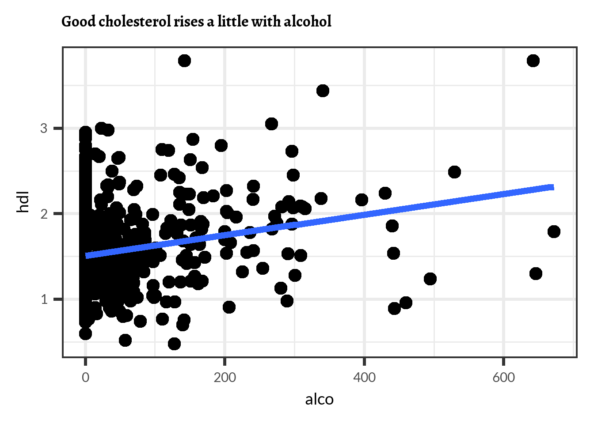
hdl rises with alco. So is it the smoking, or the drinking riding along with it? Repeat the comparison for non-drinkers only:
A_nd <- A_flag |> filter(!drinker)
A_nd |> gf_violin(hdl ~ smok, fill = ~ smok) |> gf_facet_grid(~ sex) |>
gf_labs(title = "Non-drinkers only: male smokers still have higher HDL", x = NULL)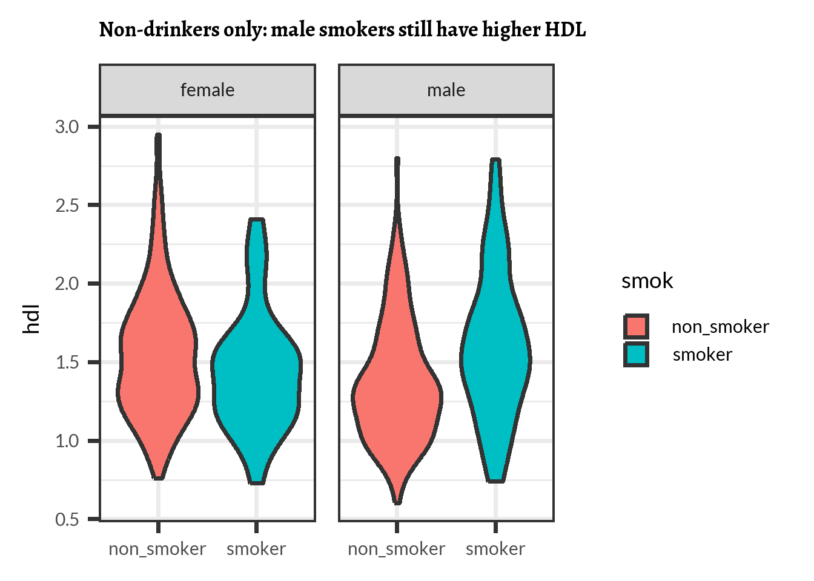
A_nd |> gf_violin(ldl ~ smok, fill = ~ smok) |> gf_facet_grid(~ sex) |>
gf_labs(title = "Non-drinkers only: male smokers still have lower LDL", x = NULL)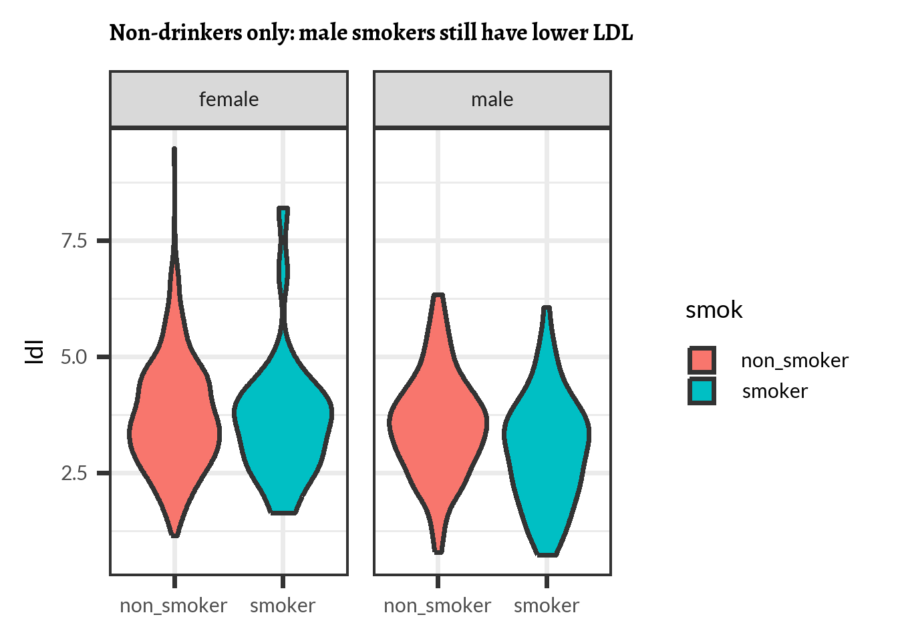
Stat test for means, beside the matching violin (men only, since the women smoker group is just 36 people):
A_men <- A_mod |> filter(sex == "male")
mosaic::t.test(hdl ~ smok, data = A_men)
Welch Two Sample t-test
data: hdl by smok
t = -4.9038, df = 342.58, p-value = 1.455e-06
alternative hypothesis: true difference in means between group non_smoker and group smoker is not equal to 0
95 percent confidence interval:
-0.3322454 -0.1420173
sample estimates:
mean in group non_smoker mean in group smoker
1.445436 1.682567 mosaic::t.test(ldl ~ smok, data = A_men)
Welch Two Sample t-test
data: ldl by smok
t = 4.5786, df = 389.59, p-value = 6.307e-06
alternative hypothesis: true difference in means between group non_smoker and group smoker is not equal to 0
95 percent confidence interval:
0.2882782 0.7221729
sample estimates:
mean in group non_smoker mean in group smoker
3.393728 2.888503 # and again with non-drinking men only
A_men_nd <- A_men |> filter(alco == 0)
mosaic::t.test(hdl ~ smok, data = A_men_nd)
Welch Two Sample t-test
data: hdl by smok
t = -3.4683, df = 87.494, p-value = 0.0008146
alternative hypothesis: true difference in means between group non_smoker and group smoker is not equal to 0
95 percent confidence interval:
-0.36792011 -0.09986561
sample estimates:
mean in group non_smoker mean in group smoker
1.370774 1.604667 mosaic::t.test(ldl ~ smok, data = A_men_nd)
Welch Two Sample t-test
data: ldl by smok
t = 3.0438, df = 100.42, p-value = 0.002982
alternative hypothesis: true difference in means between group non_smoker and group smoker is not equal to 0
95 percent confidence interval:
0.1827094 0.8666715
sample estimates:
mean in group non_smoker mean in group smoker
3.517857 2.993167 6. Say
- Prediction missed. Male smokers have higher
hdl(about 0.24 higher on average) and lowerldl(about 0.5 lower) than male non-smokers, both p-values far below 0.05. - The pattern is still there among men who don’t drink (
hdlabout 0.23 higher,ldlabout 0.5 lower), so drinking alone doesn’t explain it. Among women the gap is small, and only 36 women smoke. - Women carry risk differently from men: higher
bmiin women; higherwaisthip, blood pressure andUricin men. - Blood pressure rises with age, and
waisthiplines up with the risk markers (Uric,trig,sys) more closely thanbmidoes. - 48% of this group has high blood pressure, 20% is obese, and 721 of 998 don’t drink.
7. Limit
- We can’t say how much smoking matters: we only have smoker / non-smoker, no amount or duration.
- We can’t say whether anyone got heart disease. There’s no outcome column, so a “high” value can’t be turned into “more likely to get heart disease”.
- “High blood pressure”, “obese” and “drinker” are cut-offs we chose, not columns in the data.
- This is one sample of 998 people. Associations here are not causes: a smoker’s higher
hdlis not a reason to smoke. - Only 36 women smoke, too few to be sure about women.
- We don’t know who these people are, where they’re from, or how they were chosen.
ldlis calculated fromcholes,hdlandtrig, not measured on its own.- Some values are extreme (
diaup to 172,Uricup to 1885). - Kit table we refused to abuse:
smokandsexwere never averaged or put in a histogram.
A_mod |> gf_histogram(~ choles, fill = ~ sex)`stat_bin()` using `bins = 30`. Pick better value `binwidth`.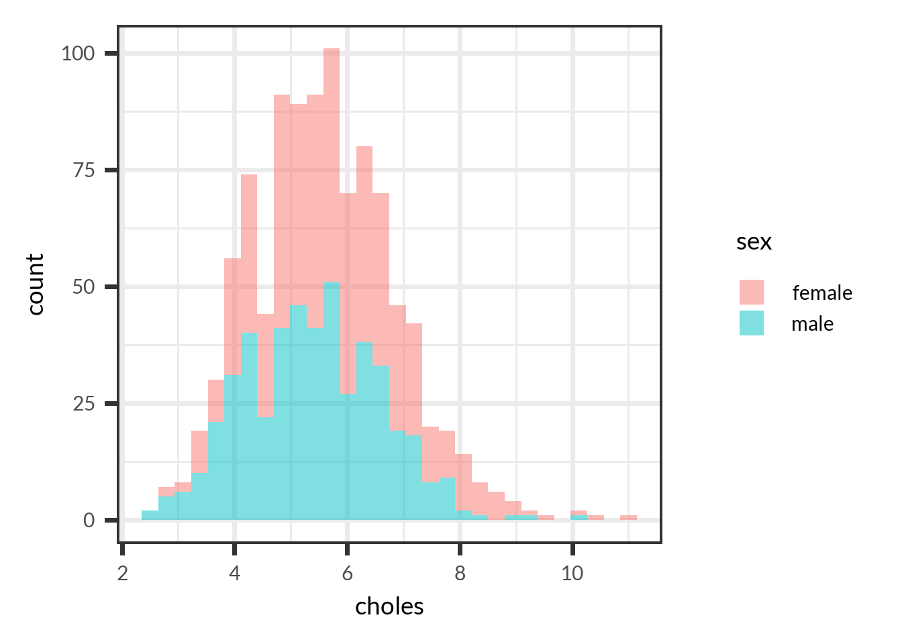
A_mod |> group_by(sex) |> summarize ( mean_choles = mean(choles, na.rm = T))# A tibble: 2 × 2
sex mean_choles
<fct> <dbl>
1 female 5.75
2 male 5.39A_mod |> group_by(smok) |> summarize ( mean_choles = mean(choles, na.rm = T))# A tibble: 2 × 2
smok mean_choles
<fct> <dbl>
1 non_smoker 5.68
2 smoker 5.25mosaic::t_test(choles ~ sex, data = A_mod)
Welch Two Sample t-test
data: choles by sex
t = 4.6478, df = 994.83, p-value = 3.806e-06
alternative hypothesis: true difference in means between group female and group male is not equal to 0
95 percent confidence interval:
0.2107243 0.5186891
sample estimates:
mean in group female mean in group male
5.754580 5.389873 Panel B - category / talk
smoke × sex, cvd × sc (social class).
areais forbidden as geography. Do not averagesc.
1. See the table
# glimpse() / inspect() / skim()
dplyr::glimpse(B)Rows: 8,804
Columns: 7
$ age <dbl> 50, 71, 55, 61, 32, 26, 68, 32, 20, 37, 47, 37, 70, 34, 49, 4…
$ sex <chr> "female", "female", "female", "female", "female", "female", "…
$ sc <dbl> 3, 45, 45, 3, 12, 3, 45, 12, 45, 12, 12, 45, 12, 3, 3, 12, 3,…
$ carstair <dbl> -2.45, -2.45, -2.45, -2.45, -2.45, -2.45, -2.45, -2.45, -2.45…
$ smoke <chr> "nevr", "nevr", "mod", "ex", "ex", "mod", "hvy", "nevr", "ex"…
$ area <dbl> 1, 1, 1, 1, 1, 1, 1, 1, 1, 1, 1, 1, 1, 1, 1, 1, 1, 1, 1, 1, 1…
$ cvd <chr> "no", "no", "no", "yes", "no", "no", "yes", "yes", "no", "no"…Our Panel-B data has:
- 8804 observations and 7 variables. One case = one person in the Scottish Health Survey, 1998.
age: Quantitative, numericsex: Qualitative, categorical. Encoded<chr>, to be mutatedsc: Qualitative, categorical (social class, based on job). Encoded as numbers12,3,45, but these are labels, not amounts. To be mutatedcarstair: Quantitative, numeric (Carstairs deprivation score of the person’s area; higher = more deprived)smoke: Qualitative, categorical. Encoded<chr>, to be mutatedarea: Qualitative, a code for where people live. Not a map, not a numbercvd: Qualitative, categorical (cardiovascular disease, yes / no). Encoded<chr>, to be mutated
B |> slice(1)# A tibble: 1 × 7
age sex sc carstair smoke area cvd
<dbl> <chr> <dbl> <dbl> <chr> <dbl> <chr>
1 50 female 3 -2.45 nevr 1 no Row 1 is one person: a 50-year-old woman in social class III, who has never smoked, lives in a less deprived area (carstair -2.45) and doesn’t have CVD.
skimr::skim(B)| Name | B |
| Number of rows | 8804 |
| Number of columns | 7 |
| _______________________ | |
| Column type frequency: | |
| character | 3 |
| numeric | 4 |
| ________________________ | |
| Group variables | None |
Variable type: character
| skim_variable | n_missing | complete_rate | min | max | empty | n_unique | whitespace |
|---|---|---|---|---|---|---|---|
| sex | 0 | 1 | 4 | 6 | 0 | 2 | 0 |
| smoke | 0 | 1 | 2 | 4 | 0 | 5 | 0 |
| cvd | 0 | 1 | 2 | 3 | 0 | 2 | 0 |
Variable type: numeric
| skim_variable | n_missing | complete_rate | mean | sd | p0 | p25 | p50 | p75 | p100 | hist |
|---|---|---|---|---|---|---|---|---|---|---|
| age | 0 | 1 | 46.21 | 15.52 | 18.00 | 33.00 | 45.00 | 60.00 | 74.00 | ▆▇▆▆▆ |
| sc | 0 | 1 | 18.34 | 18.09 | 3.00 | 3.00 | 12.00 | 45.00 | 45.00 | ▇▅▁▁▆ |
| carstair | 0 | 1 | -0.20 | 3.27 | -6.23 | -2.46 | -0.68 | 1.48 | 12.53 | ▅▇▃▁▁ |
| area | 0 | 1 | 162.75 | 91.19 | 1.00 | 84.00 | 165.00 | 244.25 | 312.00 | ▆▆▇▇▇ |
On the Qual variables, panel-B data has:
sexhas 2 levels: “female” (4987) and “male” (3817)schas 3 levels:12= classes I–II, the highest (2421),3= class III (3686),45= classes IV–V, the lowest (2697)smokehas 5 levels: “nevr” (3573), “ex” (2151), “lite” (577), “mod” (1270), “hvy” (1233)cvdhas 2 levels: “no” (6389) and “yes” (2415), so about 27% have CVDareahas 312 different codes
mosaic::tally(~ sex, data = B)sex
female male
4987 3817 mosaic::tally(~ sc, data = B)sc
3 12 45
3686 2421 2697 mosaic::tally(~ smoke, data = B)smoke
ex hvy lite mod nevr
2151 1233 577 1270 3573 mosaic::tally(~ cvd, data = B)cvd
no yes
6389 2415 On the Quant variables, panel-B data has:
age: mean 46.2, sd 15.5, median 45, min 18, max 74carstair: mean -0.20, sd 3.27, median -0.68, min -6.23, max 12.53. Skewed right.- Everyone in the same
areahas the samecarstair, so it describes the neighbourhood, not the person.
There is no missing data.
B_mod <- B |>
mutate(across(where(is.character), as.factor)) |>
mutate(
sc = fct_recode(as.factor(sc),
"I-II (high)" = "12",
"III (middle)" = "3",
"IV-V (low)" = "45"),
sc = fct_relevel(sc, "I-II (high)", "III (middle)", "IV-V (low)"),
smoke = fct_relevel(smoke, "nevr", "ex", "lite", "mod", "hvy"),
area = as.factor(area)
)
glimpse(B_mod)Rows: 8,804
Columns: 7
$ age <dbl> 50, 71, 55, 61, 32, 26, 68, 32, 20, 37, 47, 37, 70, 34, 49, 4…
$ sex <fct> female, female, female, female, female, female, female, male,…
$ sc <fct> III (middle), IV-V (low), IV-V (low), III (middle), I-II (hig…
$ carstair <dbl> -2.45, -2.45, -2.45, -2.45, -2.45, -2.45, -2.45, -2.45, -2.45…
$ smoke <fct> nevr, nevr, mod, ex, ex, mod, hvy, nevr, ex, ex, nevr, ex, ne…
$ area <fct> 1, 1, 1, 1, 1, 1, 1, 1, 1, 1, 1, 1, 1, 1, 1, 1, 1, 1, 1, 1, 1…
$ cvd <fct> no, no, no, yes, no, no, yes, yes, no, no, no, no, no, no, no…sc gets readable names, and smoke goes in order from never to heavy instead of alphabetical. age and carstair stay as numbers.
One helper column: carstair cut into three equal groups. These are cut-offs we chose (equal thirds), not groups in the data.
B_mod <- B_mod |>
mutate(deprivation = cut_number(carstair, n = 3,
labels = c("less deprived", "middle", "more deprived")))All ready now.
2. Ask
Based on the spine (how do class and smoke talk), these are our questions:
Possibly can answer:
- Does higher social class (
sc) go with lower deprivation (carstair)? - Is deprivation related to CVD?
- Does social class affect CVD?
- Does smoking lower your risk of CVD? (Main Character Question)
Possibly cannot answer:
- Why do ex-smokers have the highest rate of CVD? Did they quit because they got ill? (No dates for quitting or diagnosis.)
3. Choose a mark
- Bar chart for the Qual counts (
sex,sc,smoke,cvd) - Boxplot for Quant + Qual (
carstairbysc,carstairbycvd,agebysmoke) - Mosaic plot for Qual + Qual (
deprivation × sc,cvd × sc,smoke × cvd), shaded to show surprises - Chi-square test beside each mosaic: are two categories linked, or is it chance?
- t-test (2 groups)
4. Predict
- Question 1: Higher social classes will live in less deprived areas.
- Question 2: Deprivation and CVD will be inversely related.
- Question 3: Lower social classes will have more CVD.
- Question 4 (Main): Smokers will have more CVD than people who never smoked.
5. Make
These are the charts we used to explore the data. They don’t show up in the render, but they helped us decide what to look at next.
## Qual counts
B_mod |> gf_bar(~ sex)
B_mod |> gf_bar(~ sc)
B_mod |> gf_bar(~ smoke)
B_mod |> gf_bar(~ cvd)
## Quant shapes
B_mod |> gf_density(~ age)
B_mod |> gf_density(~ carstair)Question 1: does higher social class go with lower deprivation?
B_mod |> gf_boxplot(carstair ~ sc, fill = ~ sc) |>
gf_labs(title = "Lower social class, more deprived neighbourhood",
x = "Social class", y = "Carstairs score (higher = more deprived)")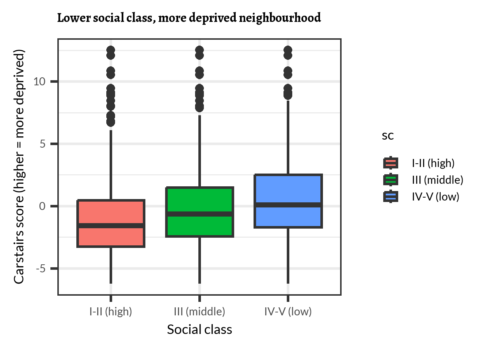
vcd::structable(deprivation ~ sc, data = B_mod) |>
vcd::mosaic(shade = TRUE, main = "Higher classes live in less deprived areas")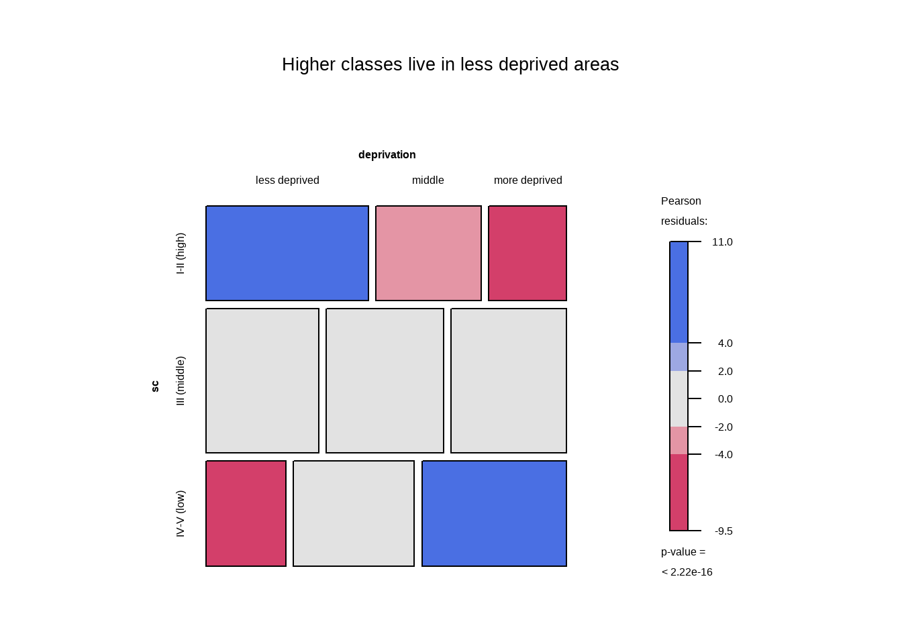
B_mod |> group_by(sc) |> summarise(mean_carstair = mean(carstair), n = n())# A tibble: 3 × 3
sc mean_carstair n
<fct> <dbl> <int>
1 I-II (high) -1.24 2421
2 III (middle) -0.145 3686
3 IV-V (low) 0.648 2697aov(carstair ~ sc, data = B_mod) |> summary() Df Sum Sq Mean Sq F value Pr(>F)
sc 2 4561 2280.3 224.2 <2e-16 ***
Residuals 8801 89517 10.2
---
Signif. codes: 0 '***' 0.001 '**' 0.01 '*' 0.05 '.' 0.1 ' ' 1Prediction was right. Class I–II averages -1.24 on carstair, class IV–V averages +0.65. 47% of class I–II live in the least deprived third of areas, compared to 23% of class IV–V.
Question 2: is deprivation related to CVD?
Our first look:
B_mod |>
gf_histogram(~ carstair, fill = ~ cvd) |>
gf_facet_wrap(~ smoke)`stat_bin()` using `bins = 30`. Pick better value `binwidth`.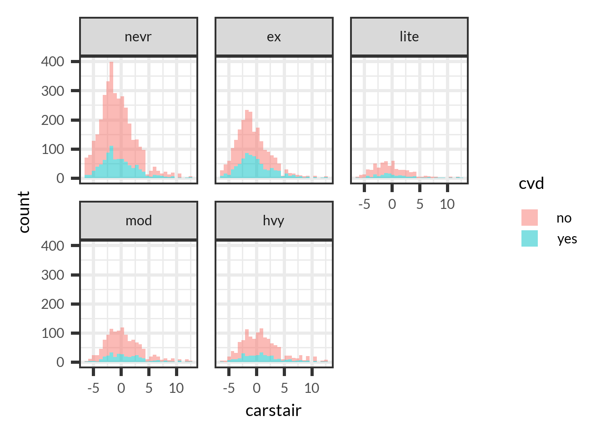
Hard to compare, because the cvd groups and smoking groups are such different sizes. So, a boxplot and a mosaic:
B_mod |> gf_boxplot(carstair ~ cvd, fill = ~ cvd) |>
gf_labs(title = "People with CVD live in slightly more deprived areas",
x = "CVD", y = "Carstairs score (higher = more deprived)")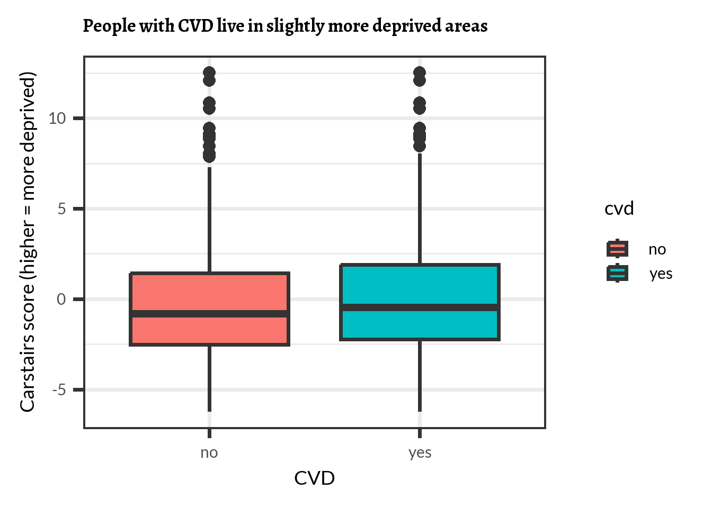
vcd::structable(cvd ~ deprivation, data = B_mod) |>
vcd::mosaic(shade = TRUE, main = "A little more CVD in more deprived areas")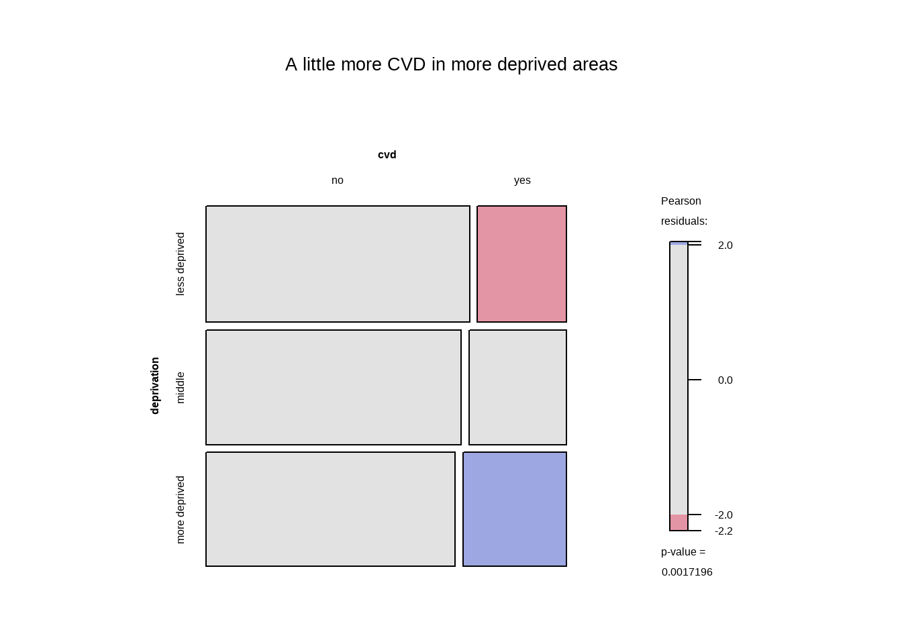
mosaic::t_test(carstair ~ cvd, data = B_mod)
Welch Two Sample t-test
data: carstair by cvd
t = -4.9615, df = 4247.5, p-value = 7.269e-07
alternative hypothesis: true difference in means between group no and group yes is not equal to 0
95 percent confidence interval:
-0.5463623 -0.2368695
sample estimates:
mean in group no mean in group yes
-0.31012521 0.08149068 Prediction missed, in direction. It’s not inverse: more deprivation goes with a bit more CVD. 25% of people in the least deprived third have CVD, compared to 29% in the most deprived third. The gap is small, but the t-test says it’s real (p far below 0.05).
Question 3: does social class affect CVD?
vcd::structable(cvd ~ sc, data = B_mod) |>
vcd::mosaic(shade = TRUE, main = "CVD barely changes across social class")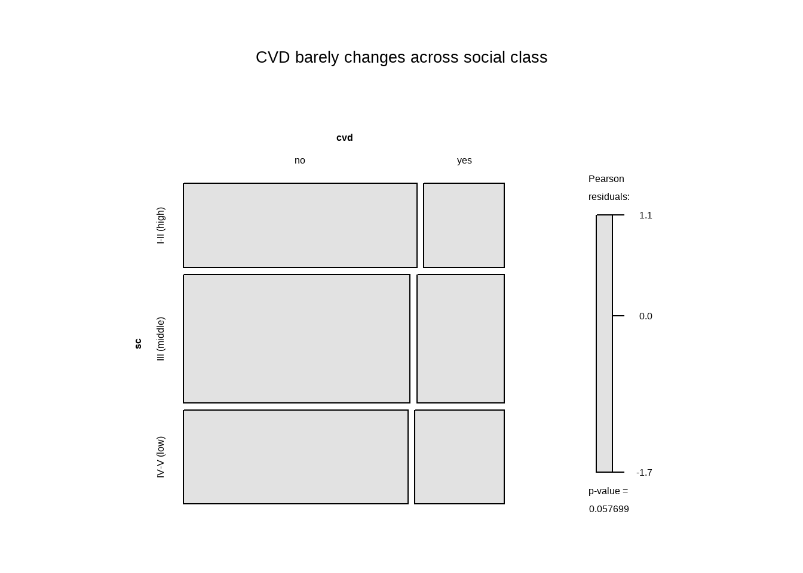
B_mod |> group_by(sc) |> summarise(pct_cvd = mean(cvd == "yes"), n = n())# A tibble: 3 × 3
sc pct_cvd n
<fct> <dbl> <int>
1 I-II (high) 0.257 2421
2 III (middle) 0.278 3686
3 IV-V (low) 0.285 2697mosaic::xchisq.test(mosaic::tally(cvd ~ sc, data = B_mod))
Pearson's Chi-squared test
data: x
X-squared = 5.705, df = 2, p-value = 0.0577
1800 2661 1928
(1756.90) (2674.90) (1957.19)
[1.057] [0.072] [0.435]
< 1.03> <-0.27> <-0.66>
621 1025 769
( 664.10) (1011.10) ( 739.81)
[2.797] [0.191] [1.152]
<-1.67> < 0.44> < 1.07>
key:
observed
(expected)
[contribution to X-squared]
<Pearson residual>Only a small difference: 25.7% (I–II), 27.8% (III), 28.5% (IV–V). The chi-square p-value is about 0.06, just above 0.05, so we can’t say class and CVD are linked here.
Class does talk to smoking, though:
vcd::structable(smoke ~ sc, data = B_mod) |>
vcd::mosaic(shade = TRUE, main = "Lower classes smoke more heavily")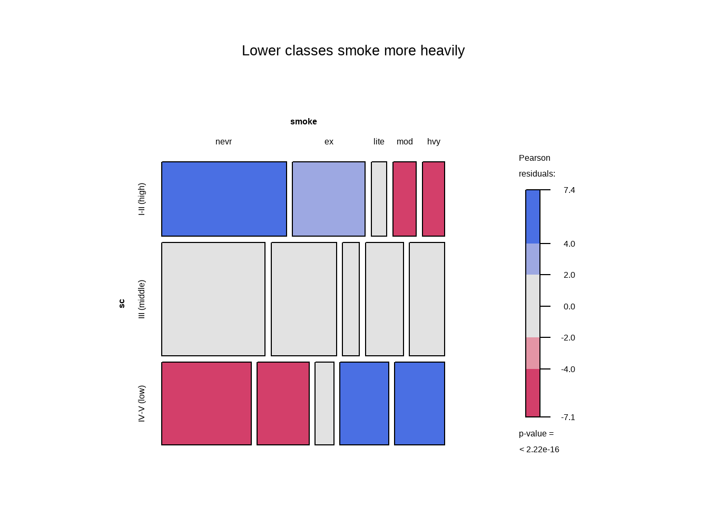
48% of class I–II have never smoked, compared to 35% of class IV–V. Heavy smokers: 9% vs 19%.
Question 4 (Main): does smoking lower your risk of CVD?
Our mosaics and test:
vcd::structable(smoke ~ cvd, data = B_mod) |> vcd::mosaic()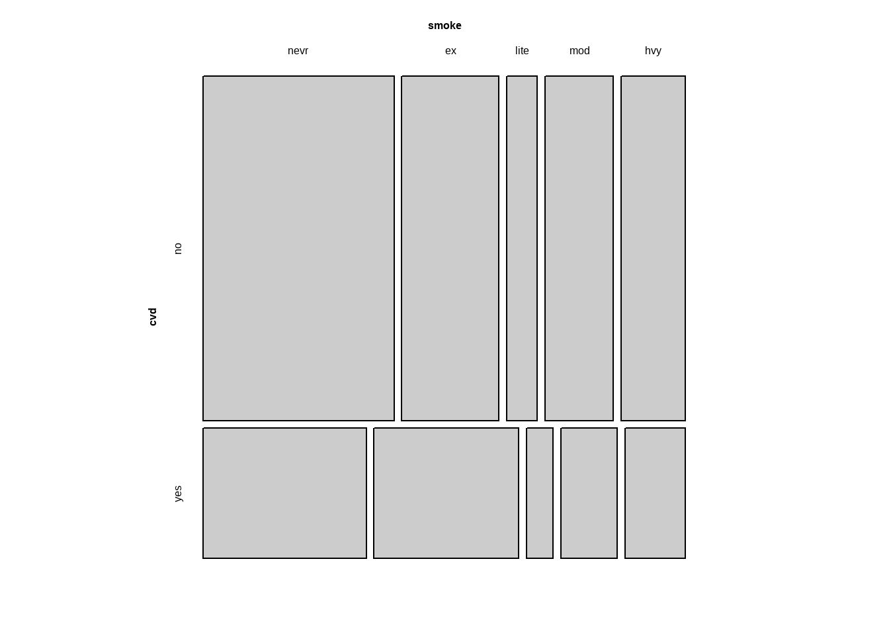
vcd::structable(smoke ~ cvd, data = B_mod) |> vcd::mosaic(type = "expected")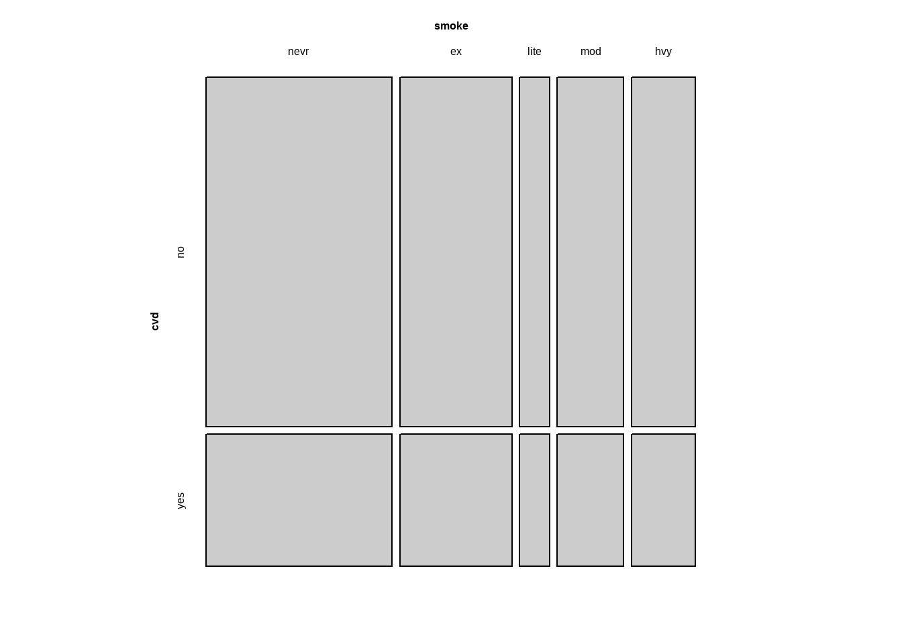
vcd::structable(smoke ~ cvd, data = B_mod) |>
vcd::mosaic(shade = TRUE, main = "Ex-smokers stand out with the most CVD")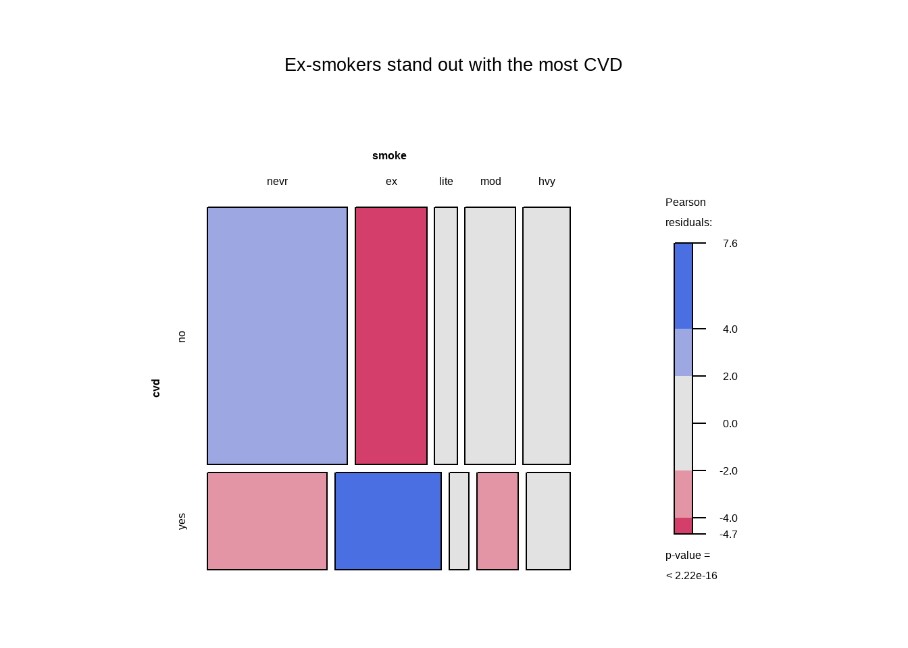
B_mod |> group_by(smoke) |> summarise(pct_cvd = mean(cvd == "yes"), n = n())# A tibble: 5 × 3
smoke pct_cvd n
<fct> <dbl> <int>
1 nevr 0.244 3573
2 ex 0.360 2151
3 lite 0.248 577
4 mod 0.238 1270
5 hvy 0.262 1233mosaic::xchisq.test(mosaic::tally(smoke ~ cvd, data = B_mod))
Pearson's Chi-squared test
data: x
X-squared = 107.81, df = 4, p-value < 2.2e-16
2701 872
(2592.90) ( 980.10)
[ 4.51] [11.92]
< 2.12> <-3.45>
1376 775
(1560.97) ( 590.03)
[21.92] [57.98]
<-4.68> < 7.61>
434 143
( 418.72) ( 158.28)
[ 0.56] [ 1.47]
< 0.75> <-1.21>
968 302
( 921.63) ( 348.37)
[ 2.33] [ 6.17]
< 1.53> <-2.48>
910 323
( 894.78) ( 338.22)
[ 0.26] [ 0.68]
< 0.51> <-0.83>
key:
observed
(expected)
[contribution to X-squared]
<Pearson residual>Prediction missed. Current smokers (lite, mod, hvy: 24–26%) have about the same CVD rate as people who never smoked (24%). The group that stands out is ex-smokers, at 36%. Why?
B_mod |> gf_boxplot(age ~ smoke, fill = ~ smoke) |>
gf_labs(title = "Ex-smokers are older than everyone else", x = NULL, y = "Age")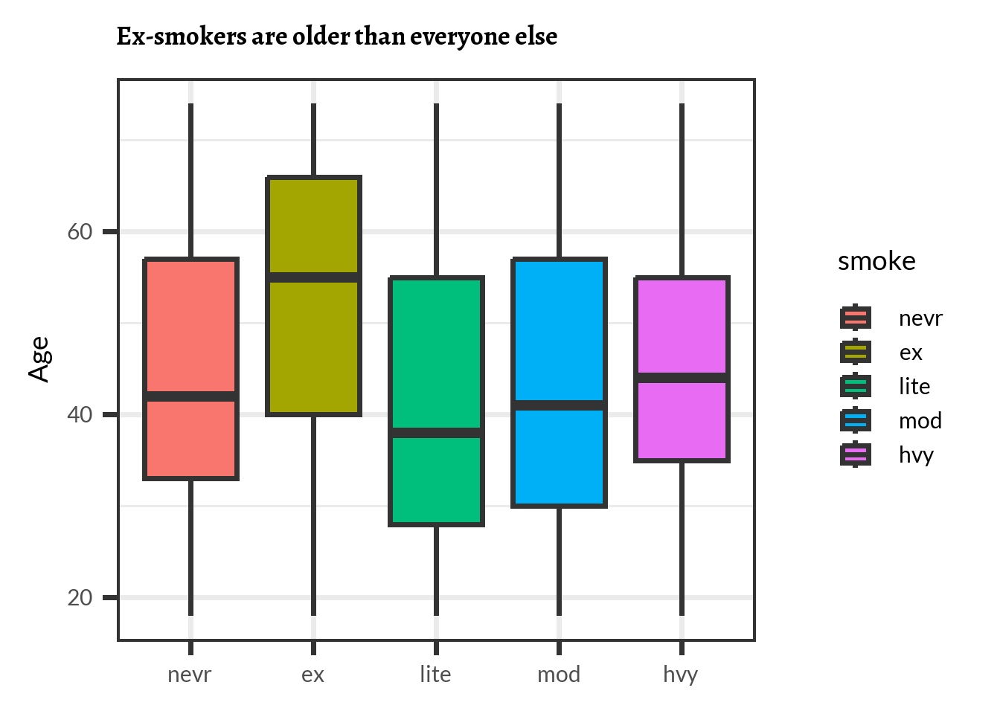
B_mod |> group_by(smoke) |> summarise(mean_age = mean(age))# A tibble: 5 × 2
smoke mean_age
<fct> <dbl>
1 nevr 44.6
2 ex 52.3
3 lite 41.9
4 mod 43.4
5 hvy 45.2Ex-smokers are older (average 52, compared to 42–45 for the other groups), and CVD goes up a lot with age. So age is probably doing a lot of the work here.
6. Say
- Class and place talk: higher social classes live in less deprived areas (class I–II average
carstair-1.24 vs +0.65 for class IV–V, p far below 0.05). - More deprived areas have slightly more CVD (25% vs 29%), the opposite direction from our prediction. Small, but real.
- Social class on its own barely changes CVD (p ≈ 0.06). Class shows up in where people live and how much they smoke more than in CVD directly.
- Smoking does not lower your risk. Current smokers have about the same CVD rate as never-smokers, and ex-smokers have the most (36%), but they’re also the oldest group.
7. Limit
- One snapshot from 1998. Links, not causes.
- We don’t know when people quit smoking or when CVD was diagnosed, so some ex-smokers may have quit because they got ill.
smokeis in groups, and we don’t know what “lite” or “hvy” actually means in cigarettes.carstairdescribes the area, not the person: a well-off person in a deprived area gets the area’s score.scis based on job type, which leaves out people without a job and says nothing about income.cvdis just yes / no, with no type or severity.- Age affects almost everything here, and we haven’t fully separated it out.
- The deprivation groups are cut-offs we chose (equal thirds).
- Kit table we refused to abuse:
scandareawere never averaged or treated as numbers, andareawas never used as a map.
Panel C - place
Asia-only lifeExp / gdpPercap / pop. Join to rnaturalearth; unmatched names are a brick.
library(sf)Linking to GEOS 3.14.1, GDAL 3.12.1, PROJ 9.7.1; sf_use_s2() is TRUElibrary(rnaturalearth)
world <- ne_countries(scale = "medium", returnclass = "sf")1. See the table
What is a case? Which columns are Quant / Qual? What is missing?
glimpse(Panel_C)Rows: 33
Columns: 6
$ country <chr> "Afghanistan", "Bahrain", "Bangladesh", "Cambodia", "China",…
$ continent <chr> "Asia", "Asia", "Asia", "Asia", "Asia", "Asia", "Asia", "Asi…
$ year <dbl> 2007, 2007, 2007, 2007, 2007, 2007, 2007, 2007, 2007, 2007, …
$ lifeExp <dbl> 43.828, 75.635, 64.062, 59.723, 72.961, 82.208, 64.698, 70.6…
$ pop <dbl> 31889923, 708573, 150448339, 14131858, 1318683096, 6980412, …
$ gdpPercap <dbl> 974.5803, 29796.0483, 1391.2538, 1713.7787, 4959.1149, 39724…inspect(Panel_C)
categorical variables:
name class levels n missing
1 country character 33 33 0
2 continent character 1 33 0
distribution
1 Afghanistan (3%), Bahrain (3%) ...
2 Asia (100%)
quantitative variables:
name class min Q1 median Q3
1 year numeric 2007.000 2007.000 2007.000 2007.000
2 lifeExp numeric 43.828 65.483 72.396 75.635
3 pop numeric 708573.000 6426679.000 24821286.000 69453570.000
4 gdpPercap numeric 944.000 2452.210 4471.062 22316.193
max mean sd n missing
1 2.007000e+03 2.007000e+03 0.000000e+00 33 0
2 8.260300e+01 7.072848e+01 7.963724e+00 33 0
3 1.318683e+09 1.155138e+08 2.896734e+08 33 0
4 4.730699e+04 1.247303e+04 1.415494e+04 33 0skim(Panel_C)| Name | Panel_C |
| Number of rows | 33 |
| Number of columns | 6 |
| _______________________ | |
| Column type frequency: | |
| character | 2 |
| numeric | 4 |
| ________________________ | |
| Group variables | None |
Variable type: character
| skim_variable | n_missing | complete_rate | min | max | empty | n_unique | whitespace |
|---|---|---|---|---|---|---|---|
| country | 0 | 1 | 4 | 18 | 0 | 33 | 0 |
| continent | 0 | 1 | 4 | 4 | 0 | 1 | 0 |
Variable type: numeric
| skim_variable | n_missing | complete_rate | mean | sd | p0 | p25 | p50 | p75 | p100 | hist |
|---|---|---|---|---|---|---|---|---|---|---|
| year | 0 | 1 | 2007.00 | 0.00 | 2007.00 | 2007.00 | 2007.00 | 2007.00 | 2.007000e+03 | ▁▁▇▁▁ |
| lifeExp | 0 | 1 | 70.73 | 7.96 | 43.83 | 65.48 | 72.40 | 75.64 | 8.260000e+01 | ▁▁▅▇▅ |
| pop | 0 | 1 | 115513752.33 | 289673399.13 | 708573.00 | 6426679.00 | 24821286.00 | 69453570.00 | 1.318683e+09 | ▇▁▁▁▁ |
| gdpPercap | 0 | 1 | 12473.03 | 14154.94 | 944.00 | 2452.21 | 4471.06 | 22316.19 | 4.730699e+04 | ▇▁▂▁▁ |
world <- rnaturalearth::ne_countries(returnclass = "sf")
world_selected <- world |> dplyr::select(name, geometry)
C_mod <- Panel_C |> left_join(world_selected, by = c("country" = "name"))
library(countrycode)
library(dplyr)
Panel_C <- Panel_C |>
mutate(
country = countrycode(
country,
origin = "country.name",
destination = "country.name"
)
)
world_selected <- world |>
select(name, geometry)
C_mod <- Panel_C |>
left_join(world_selected, by = c("country" = "name"))
glimpse(C_mod)Rows: 33
Columns: 7
$ country <chr> "Afghanistan", "Bahrain", "Bangladesh", "Cambodia", "China",…
$ continent <chr> "Asia", "Asia", "Asia", "Asia", "Asia", "Asia", "Asia", "Asi…
$ year <dbl> 2007, 2007, 2007, 2007, 2007, 2007, 2007, 2007, 2007, 2007, …
$ lifeExp <dbl> 43.828, 75.635, 64.062, 59.723, 72.961, 82.208, 64.698, 70.6…
$ pop <dbl> 31889923, 708573, 150448339, 14131858, 1318683096, 6980412, …
$ gdpPercap <dbl> 974.5803, 29796.0483, 1391.2538, 1713.7787, 4959.1149, 39724…
$ geometry <MULTIPOLYGON [°]> MULTIPOLYGON (((66.51861 37..., MULTIPOLYGON EM…skim(C_mod)Warning: Couldn't find skimmers for class: sfc_MULTIPOLYGON, sfc; No
user-defined `sfl` provided. Falling back to `character`.| Name | C_mod |
| Number of rows | 33 |
| Number of columns | 7 |
| _______________________ | |
| Column type frequency: | |
| character | 3 |
| numeric | 4 |
| ________________________ | |
| Group variables | None |
Variable type: character
| skim_variable | n_missing | complete_rate | min | max | empty | n_unique | whitespace |
|---|---|---|---|---|---|---|---|
| country | 0 | 1 | 4 | 23 | 0 | 33 | 0 |
| continent | 0 | 1 | 4 | 4 | 0 | 1 | 0 |
| geometry | 0 | 1 | 6 | 9303 | 0 | 29 | 0 |
Variable type: numeric
| skim_variable | n_missing | complete_rate | mean | sd | p0 | p25 | p50 | p75 | p100 | hist |
|---|---|---|---|---|---|---|---|---|---|---|
| year | 0 | 1 | 2007.00 | 0.00 | 2007.00 | 2007.00 | 2007.00 | 2007.00 | 2.007000e+03 | ▁▁▇▁▁ |
| lifeExp | 0 | 1 | 70.73 | 7.96 | 43.83 | 65.48 | 72.40 | 75.64 | 8.260000e+01 | ▁▁▅▇▅ |
| pop | 0 | 1 | 115513752.33 | 289673399.13 | 708573.00 | 6426679.00 | 24821286.00 | 69453570.00 | 1.318683e+09 | ▇▁▁▁▁ |
| gdpPercap | 0 | 1 | 12473.03 | 14154.94 | 944.00 | 2452.21 | 4471.06 | 22316.19 | 4.730699e+04 | ▇▁▂▁▁ |
What’s off in this table and what we mutate:
country: this is the only thing linking the table to the map, and the names are written a different way than the map data writes them. Five don’t match: “Hong Kong, China”, “Korea, Dem. Rep.”, “Korea, Rep.”, “West Bank and Gaza” and “Yemen, Rep.”. If we join as is, those countries come out blank. Mutated withcountrycode()so the names line up.geometry: not in the csv at all, the shapes come fromrnaturalearth. Added with a join on the country name.popandgdpPercap: numbers are fine, but they’re really lopsided. China and India are huge and a few countries are way richer than the rest, so on a colour scale most countries end up pale.lifeExp: already numeric and behaving.
2. Ask
One question this table can answer. One it cannot. Write both.
C_mod |>
gf_point(lifeExp ~ gdpPercap) |> gf_lm()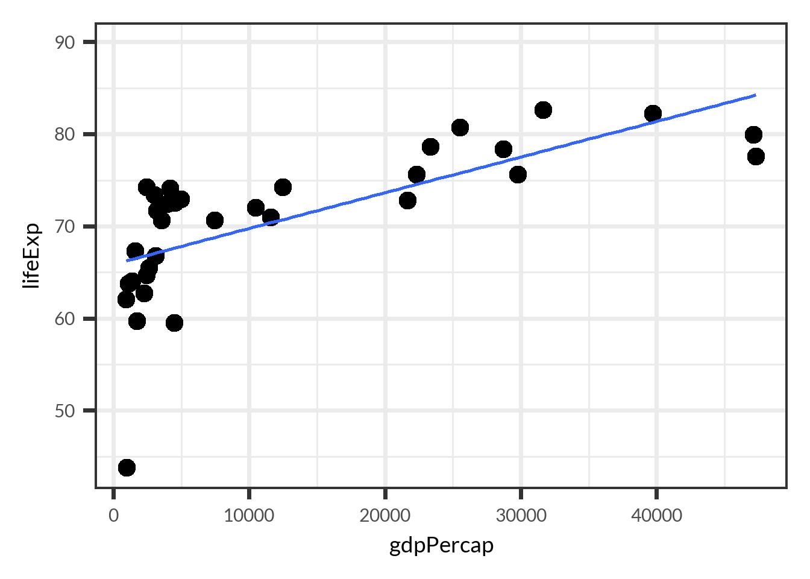
This graph is a Life Expectancy to gdp Per Capita.
It can answer How does life expectancy change in proportion to gdp Per Capita Life expectancy increases in proportion to GDP Per Capita
It can not answer What is the percentage of population in a country which is contributing to increase the GDP and is this affecting the poor percentage of the population with respect to life expectancy
3. Choose a mark
Geom, map mark, or (later) test that matches the pair type. Name it before you code.
C_mod |> gf_sf(geometry = ~ geometry, fill = ~ pop)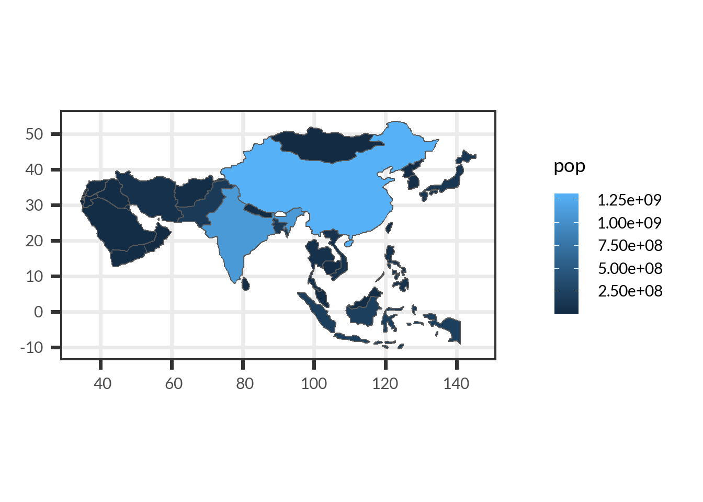
This is a gradient map with population.
This map shows that China is the country with the highest population, India in a close second place.
Most of the other countries are pretty far away from these 2.
C_mod |> gf_sf(geometry = ~ geometry, fill = ~ gdpPercap)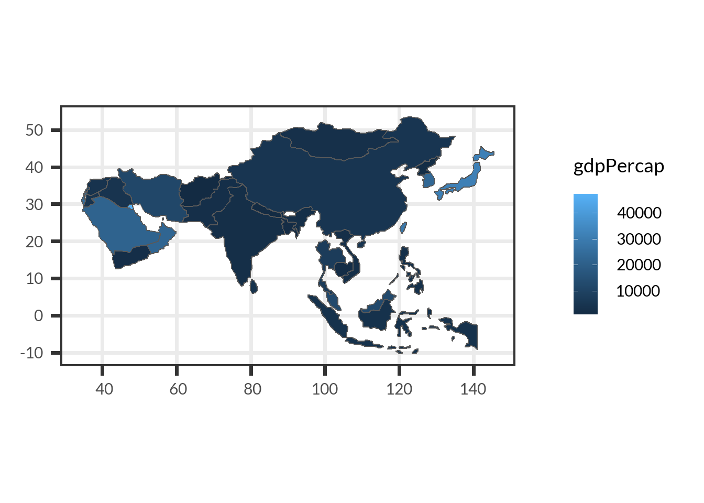
This is a gradient map with GDP Per Capita
C_mod |> gf_sf(geometry = ~ geometry, fill = ~ lifeExp)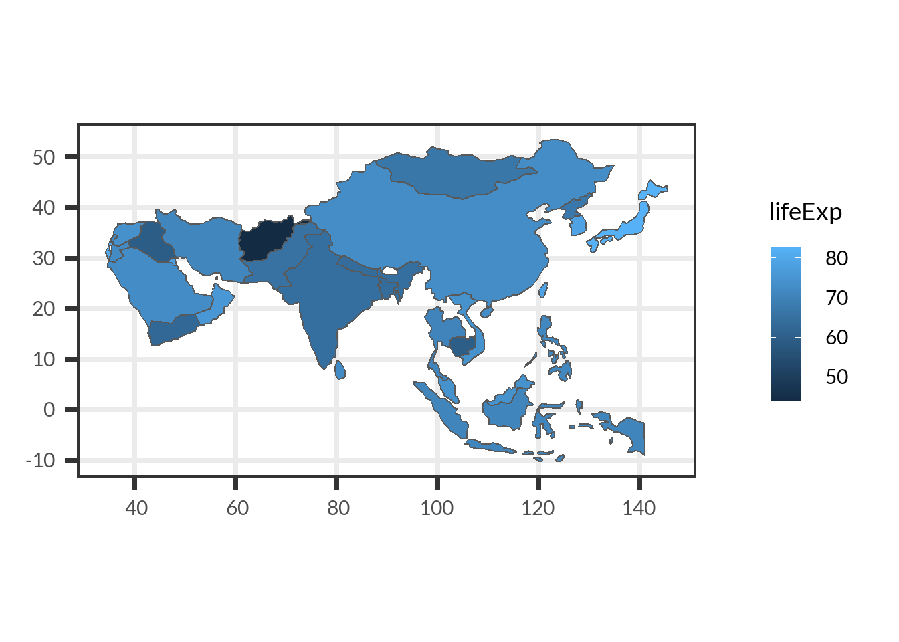
This is a gradient map with Life Expectancy
Panel D - Erin Brockovich - Hinkley
In the movie, Erin goes door to door in Hinkley asking families about their health, their water, and whether PG&E ever got in touch. Every family she talks to becomes one row. We have two made-up tables for this:
- Families (
hinkley_families.csv): Erin’s notes. 270 families, 645 people in total, living around the PG&E station. - Plume (
hinkley_plume.csv): the dirty water (chromium-6). Where the PG&E station is, and the corners of the plume polygon, split into three zones by how strong the chromium-6 is.
The two tables talk to each other through plume_zone: every family is tagged with the plume zone its house sits in (or outside). The data is made up for this assignment using Claude.
library(tidyverse)
library(mosaic)
library(skimr)
library(ggformula)
library(broom)
library(leaflet)
H <- read_csv("data/hinkley_families.csv")Rows: 270 Columns: 19
── Column specification ────────────────────────────────────────────────────────
Delimiter: ","
chr (10): family_id, family, street, in_plume, plume_zone, pet, drinks_well_...
dbl (9): house_no, lon, lat, distance_km, n_members, n_children, years_in_t...
ℹ Use `spec()` to retrieve the full column specification for this data.
ℹ Specify the column types or set `show_col_types = FALSE` to quiet this message.P <- read_csv("data/hinkley_plume.csv")Rows: 25 Columns: 6
── Column specification ────────────────────────────────────────────────────────
Delimiter: ","
chr (2): feature, zone
dbl (4): cr6_ppb, vertex_id, lon, lat
ℹ Use `spec()` to retrieve the full column specification for this data.
ℹ Specify the column types or set `show_col_types = FALSE` to quiet this message.1. See the table
glimpse(H)Rows: 270
Columns: 19
$ family_id <chr> "F001", "F002", "F003", "F004", "F005", "F006", "F00…
$ family <chr> "Jensen", "Robinson", "King", "Lewis", "Stewart", "M…
$ house_no <dbl> 7042, 8718, 5094, 6846, 3975, 2635, 7804, 3498, 1650…
$ street <chr> "Community Blvd", "Community Blvd", "Lenwood Rd", "L…
$ lon <dbl> -117.1617, -117.1607, -117.1612, -117.1602, -117.162…
$ lat <dbl> 34.89256, 34.88556, 34.89971, 34.89462, 34.90005, 34…
$ distance_km <dbl> 1.22, 2.00, 0.43, 1.00, 0.39, 2.00, 0.33, 1.89, 0.46…
$ in_plume <chr> "inside", "inside", "inside", "inside", "inside", "i…
$ plume_zone <chr> "medium", "low", "high", "medium", "high", "low", "h…
$ n_members <dbl> 5, 4, 1, 1, 4, 6, 4, 3, 1, 4, 3, 2, 1, 1, 1, 1, 1, 2…
$ n_children <dbl> 3, 2, 0, 0, 2, 4, 1, 1, 0, 1, 1, 1, 0, 0, 0, 0, 0, 1…
$ pet <chr> "cat", "none", "cat", "none", "dog", "none", "none",…
$ years_in_town <dbl> 14, 9, 20, 21, 30, 9, 26, 13, 14, 7, 21, 25, 43, 8, …
$ drinks_well_water <chr> "yes", "yes", "no", "no", "no", "yes", "yes", "no", …
$ cr6_ppb <dbl> 340.0, 190.0, 143.4, 585.0, 142.7, 17.3, 124.0, 19.0…
$ health_score <dbl> 8.4, 4.1, 1.5, 8.0, 4.4, 3.0, 8.9, 0.0, 10.0, 3.7, 3…
$ illness_level <chr> "severe", "mild", "none", "severe", "mild", "mild", …
$ contacted_by_pge <chr> "yes", "yes", "no", "yes", "yes", "no", "yes", "yes"…
$ moved_out <chr> "no", "no", "no", "yes", "no", "no", "yes", "no", "y…Our families table has:
- 270 observations and 19 variables. One case = one family.
family_id,family,street: Qualitative, just labels. Encoded<chr>house_no: Qualitative, even though it’s a number! It’s a label for a house, so never take its mean. Encoded<dbl>, to be mutatedlon,lat: Quantitative, where the house is on the mapdistance_km: Quantitative, how far the house is from the PG&E stationin_plume: Qualitative,insideoroutsidethe plume. Encoded<chr>, to be mutatedplume_zone: Qualitative,high,medium,loworoutside. Encoded<chr>, to be mutatedn_members,n_children,years_in_town: Quantitativepet,drinks_well_water: Qualitative. Encoded<chr>, to be mutatedcr6_ppb: Quantitative, the chromium-6 reading from the family’s water testhealth_score: Quantitative, 0 to 10, where 10 is the worstillness_level: Qualitative,none,mildorsevere. Encoded<chr>, to be mutatedcontacted_by_pge,moved_out: Qualitative, yes / no. Encoded<chr>, to be mutated
skim(H)| Name | H |
| Number of rows | 270 |
| Number of columns | 19 |
| _______________________ | |
| Column type frequency: | |
| character | 10 |
| numeric | 9 |
| ________________________ | |
| Group variables | None |
Variable type: character
| skim_variable | n_missing | complete_rate | min | max | empty | n_unique | whitespace |
|---|---|---|---|---|---|---|---|
| family_id | 0 | 1 | 4 | 4 | 0 | 270 | 0 |
| family | 0 | 1 | 3 | 8 | 0 | 59 | 0 |
| street | 0 | 1 | 10 | 16 | 0 | 6 | 0 |
| in_plume | 0 | 1 | 6 | 7 | 0 | 2 | 0 |
| plume_zone | 0 | 1 | 3 | 7 | 0 | 4 | 0 |
| pet | 0 | 1 | 3 | 5 | 0 | 6 | 0 |
| drinks_well_water | 0 | 1 | 2 | 3 | 0 | 2 | 0 |
| illness_level | 0 | 1 | 4 | 6 | 0 | 3 | 0 |
| contacted_by_pge | 0 | 1 | 2 | 3 | 0 | 2 | 0 |
| moved_out | 0 | 1 | 2 | 3 | 0 | 2 | 0 |
Variable type: numeric
| skim_variable | n_missing | complete_rate | mean | sd | p0 | p25 | p50 | p75 | p100 | hist |
|---|---|---|---|---|---|---|---|---|---|---|
| house_no | 0 | 1 | 5313.58 | 2865.23 | 135.00 | 2958.75 | 5386.50 | 7491.00 | 9959.00 | ▆▆▇▇▇ |
| lon | 0 | 1 | -117.16 | 0.01 | -117.18 | -117.17 | -117.16 | -117.16 | -117.15 | ▂▃▇▅▃ |
| lat | 0 | 1 | 34.90 | 0.01 | 34.88 | 34.89 | 34.90 | 34.90 | 34.91 | ▂▃▆▇▇ |
| distance_km | 0 | 1 | 1.14 | 0.68 | 0.01 | 0.55 | 1.07 | 1.57 | 3.02 | ▇▇▆▃▁ |
| n_members | 0 | 1 | 2.39 | 1.32 | 1.00 | 1.00 | 2.00 | 3.00 | 6.00 | ▇▂▁▁▁ |
| n_children | 0 | 1 | 0.49 | 0.74 | 0.00 | 0.00 | 0.00 | 1.00 | 4.00 | ▇▃▁▁▁ |
| years_in_town | 0 | 1 | 16.22 | 11.42 | 1.00 | 8.00 | 14.00 | 21.00 | 74.00 | ▇▅▁▁▁ |
| cr6_ppb | 0 | 1 | 55.83 | 69.56 | 2.90 | 16.58 | 34.80 | 66.65 | 585.00 | ▇▁▁▁▁ |
| health_score | 0 | 1 | 3.61 | 2.43 | 0.00 | 1.72 | 3.10 | 5.07 | 10.00 | ▇▇▅▂▂ |
On the Qual variables, the families table has:
in_plume: 115 families inside, 155 outsideplume_zone: 30high, 37medium, 48low, 155outsideillness_level: 125none, 98mild, 47severecontacted_by_pge: 83 yes, 187 nomoved_out: 82 yes, 188 nodrinks_well_water: 151 yes, 119 nopet: dog 96, none 82, cat 53, horse 16, other 13, bird 10
On the Quant variables, the families table has:
distance_km: mean 1.14, sd 0.68, median 1.07, min 0.01, max 3.02health_score: mean 3.61, sd 2.43, median 3.1, max 10cr6_ppb: mean 56, median 35, max 585. Very skewed right: a few water tests are way higher than the restyears_in_town: mean 16.2, median 14, max 74 (a couple of very long-term residents)n_members: mean 2.4, and it adds up to 645 people
There is no missing data.
Now the plume table:
glimpse(P)Rows: 25
Columns: 6
$ feature <chr> "plant", "plume", "plume", "plume", "plume", "plume", "plume…
$ zone <chr> "source", "high", "high", "high", "high", "high", "high", "h…
$ cr6_ppb <dbl> 200, 150, 150, 150, 150, 150, 150, 150, 150, 60, 60, 60, 60,…
$ vertex_id <dbl> 1, 1, 2, 3, 4, 5, 6, 7, 8, 1, 2, 3, 4, 5, 6, 7, 8, 1, 2, 3, …
$ lon <dbl> -117.1622, -117.1628, -117.1616, -117.1607, -117.1603, -117.…
$ lat <dbl> 34.90356, 34.90375, 34.90375, 34.90090, 34.89786, 34.89482, …- 25 rows and 6 columns. The first row (
feature = plant) is the PG&E station. The other 24 rows are the corners of three nested plume polygons (8 corners each), one for eachzone. feature,zone: Qualitativecr6_ppb: Quantitative, the chromium-6 level for that zone (about 150 inhigh, 60 inmedium, 20 inlow)vertex_id: the order of the corners (a label, so don’t average it)lon,lat: Quantitative, the position of the station or the corner
Now the mutating. as_factor() for the Qual columns, plus two helper columns for the charts. These are cut-offs we chose, not columns in the data: “affected” means illness_level is mild or severe, and distance_band chops distance_km into 4 rings around the station.
H_mod <- H |>
mutate(
across(c(house_no, in_plume, plume_zone, pet, drinks_well_water,
illness_level, contacted_by_pge, moved_out), as_factor),
affected = as_factor(if_else(illness_level == "none", "unaffected", "affected")),
distance_band = cut(distance_km,
breaks = c(0, 0.5, 1, 1.5, Inf),
labels = c("0 to 0.5 km", "0.5 to 1 km", "1 to 1.5 km", "1.5+ km"),
include.lowest = TRUE)
)
glimpse(H_mod)Rows: 270
Columns: 21
$ family_id <chr> "F001", "F002", "F003", "F004", "F005", "F006", "F00…
$ family <chr> "Jensen", "Robinson", "King", "Lewis", "Stewart", "M…
$ house_no <fct> 7042, 8718, 5094, 6846, 3975, 2635, 7804, 3498, 1650…
$ street <chr> "Community Blvd", "Community Blvd", "Lenwood Rd", "L…
$ lon <dbl> -117.1617, -117.1607, -117.1612, -117.1602, -117.162…
$ lat <dbl> 34.89256, 34.88556, 34.89971, 34.89462, 34.90005, 34…
$ distance_km <dbl> 1.22, 2.00, 0.43, 1.00, 0.39, 2.00, 0.33, 1.89, 0.46…
$ in_plume <fct> inside, inside, inside, inside, inside, inside, insi…
$ plume_zone <fct> medium, low, high, medium, high, low, high, low, low…
$ n_members <dbl> 5, 4, 1, 1, 4, 6, 4, 3, 1, 4, 3, 2, 1, 1, 1, 1, 1, 2…
$ n_children <dbl> 3, 2, 0, 0, 2, 4, 1, 1, 0, 1, 1, 1, 0, 0, 0, 0, 0, 1…
$ pet <fct> cat, none, cat, none, dog, none, none, dog, cat, non…
$ years_in_town <dbl> 14, 9, 20, 21, 30, 9, 26, 13, 14, 7, 21, 25, 43, 8, …
$ drinks_well_water <fct> yes, yes, no, no, no, yes, yes, no, yes, yes, no, no…
$ cr6_ppb <dbl> 340.0, 190.0, 143.4, 585.0, 142.7, 17.3, 124.0, 19.0…
$ health_score <dbl> 8.4, 4.1, 1.5, 8.0, 4.4, 3.0, 8.9, 0.0, 10.0, 3.7, 3…
$ illness_level <fct> severe, mild, none, severe, mild, mild, severe, none…
$ contacted_by_pge <fct> yes, yes, no, yes, yes, no, yes, yes, no, no, no, no…
$ moved_out <fct> no, no, no, yes, no, no, yes, no, yes, no, yes, no, …
$ affected <fct> affected, affected, unaffected, affected, affected, …
$ distance_band <fct> 1 to 1.5 km, 1.5+ km, 0 to 0.5 km, 0.5 to 1 km, 0 to…H_mod |> summarise(n_affected = sum(affected == "affected"),
pct_affected = round(100 * mean(affected == "affected"), 1))# A tibble: 1 × 2
n_affected pct_affected
<int> <dbl>
1 145 53.7Findings from this look:
- 270 families and 645 people. 115 families live inside the plume.
- 145 families (54%) are affected, meaning
mildorsevere. 47 aresevere. - 82 families (30%) have moved out, and PG&E contacted 83.
- No missing values, so every chart and test uses all 270 families.
2. Ask
Based on the movie, these are our questions:
Possibly can answer:
- Are families closer to the PG&E station more likely to be affected? And is health different inside vs outside the plume?
- Did the families who moved out live closer to the station?
- Did families that PG&E contacted move out more often than the ones it didn’t?
- Does health get worse closer to the station?
- On a map, do the sick families sit where the plume is strongest?
Possibly cannot answer:
- Did the chromium-6 cause the illness? (No dates, nothing about age or smoking.)
- Why did a family move? (We only know yes / no, not the reason.)
3. Choose a mark
- Bar chart for Qual + Qual:
affectedbydistance_band. Bars go to 100% so the bands can be compared fairly, because they have different numbers of families. - Two-sample t-test (Quant + 2 groups):
health_scoreinside vs outside the plume. - Histogram for one Quant:
distance_km, only for families that moved out. - Bar chart for Qual + Qual:
contacted_by_pge, filled bymoved_out. - Scatter + straight-line smoother for Quant + Quant:
health_score ~ distance_km, with a correlation number to back it up. - Three
leafletmaps :- Map 1: families as coloured dots, with the plume zones drawn on top as polygons, plus markers for the PG&E station and Erin
- Map 2: rings around the station with
addCircles()(radius in metres), families sized by health score. Greater the circle, worse the health score. - Map 3: who moved out and who PG&E contacted
4. Predict
- Question 1: The closer to the station, the bigger the share of affected families, and inside-plume families will have a higher average health score.
- Question 2: Most families that moved out will live close to the station.
- Question 3: Families PG&E contacted will move out more often.
- Question 4: Health scores will get worse closer to the station.
- Maps: The red (severe) dots will bunch up in the strongest plume zones, and the families that moved out will mostly come from near the station.
5. Make
Question 1: are families closer to the station more likely to be affected?
H_mod |>
gf_bar(~ distance_band, fill = ~ affected, position = "fill") |>
gf_labs(
x = "Distance from the PG&E station",
y = "Share of families",
fill = "Status",
)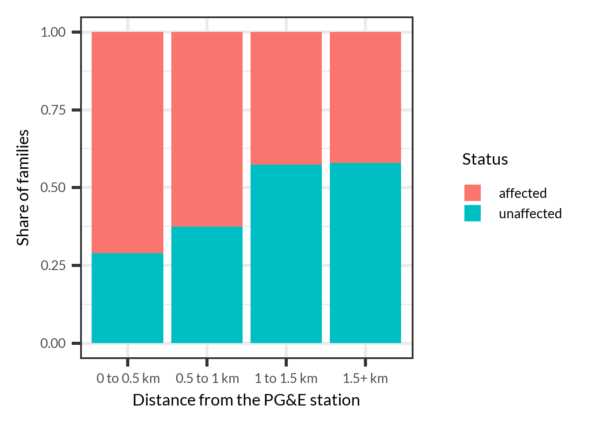
H_mod |> group_by(distance_band) |>
summarise(n = n(),
n_affected = sum(affected == "affected"),
pct_affected = round(100 * mean(affected == "affected"), 1))# A tibble: 4 × 4
distance_band n n_affected pct_affected
<fct> <int> <int> <dbl>
1 0 to 0.5 km 59 42 71.2
2 0.5 to 1 km 67 42 62.7
3 1 to 1.5 km 68 29 42.6
4 1.5+ km 76 32 42.171% of families in the closest ring (0 to 0.5 km) are affected, then 63%, 43% and 42% as we move out. After about 1 km it stops dropping.
Same question, but with a test. Is the average health score different inside and outside the plume? Our starting guess (H0) is that it’s the same.
H_mod |> group_by(in_plume) |>
summarise(n = n(),
pct_affected = round(100 * mean(affected == "affected"), 1),
mean_health = round(mean(health_score), 2))# A tibble: 2 × 4
in_plume n pct_affected mean_health
<fct> <int> <dbl> <dbl>
1 inside 115 70.4 4.57
2 outside 155 41.3 2.9 mosaic::t.test(health_score ~ in_plume, data = H_mod)
Welch Two Sample t-test
data: health_score by in_plume
t = 5.6891, df = 196.48, p-value = 4.583e-08
alternative hypothesis: true difference in means between group inside and group outside is not equal to 0
95 percent confidence interval:
1.096754 2.260553
sample estimates:
mean in group inside mean in group outside
4.574783 2.896129 broom::tidy(mosaic::t.test(health_score ~ in_plume, data = H_mod))# A tibble: 1 × 10
estimate estimate1 estimate2 statistic p.value parameter conf.low conf.high
<dbl> <dbl> <dbl> <dbl> <dbl> <dbl> <dbl> <dbl>
1 1.68 4.57 2.90 5.69 4.58e-8 196. 1.10 2.26
# ℹ 2 more variables: method <chr>, alternative <chr>Inside the plume, 70% of families are affected, compared to 41% outside. The average health score is 4.57 inside and 2.90 outside, so about 1.7 points worse inside (95% CI about 1.1 to 2.3; t = 5.69, p far below 0.05). The two averages are not the same.
Question 2: did the families who moved out live closer to the station?
H_mod |>
filter(moved_out == "yes") |>
gf_histogram(~ distance_km, binwidth = 0.5, boundary = 0, color = "white") |>
gf_labs(
x = "Distance from the PG&E station (km)",
y = "Families that moved out"
)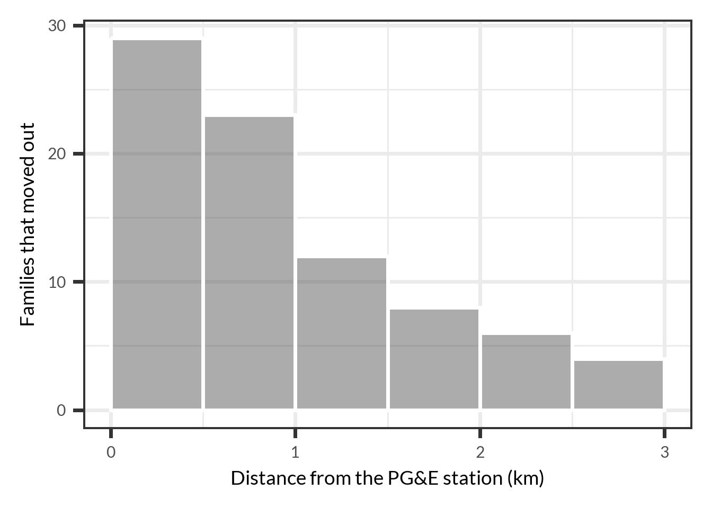
H_mod |> group_by(moved_out) |>
summarise(n = n(), median_distance = median(distance_km))# A tibble: 2 × 3
moved_out n median_distance
<fct> <int> <dbl>
1 no 188 1.15
2 yes 82 0.6582 families moved out, and 52 of them (29 + 23) lived within 1 km of the station. The median distance is about 0.65 km for families that moved vs 1.15 km for families that stayed. Some moved from further out too.
Question 3: did families that PG&E contacted move out more often?
H_mod |>
gf_bar(~ contacted_by_pge, fill = ~ moved_out, position = "dodge") |>
gf_labs(
x = "Contacted by PG&E?",
y = "Families",
fill = "Moved out?"
)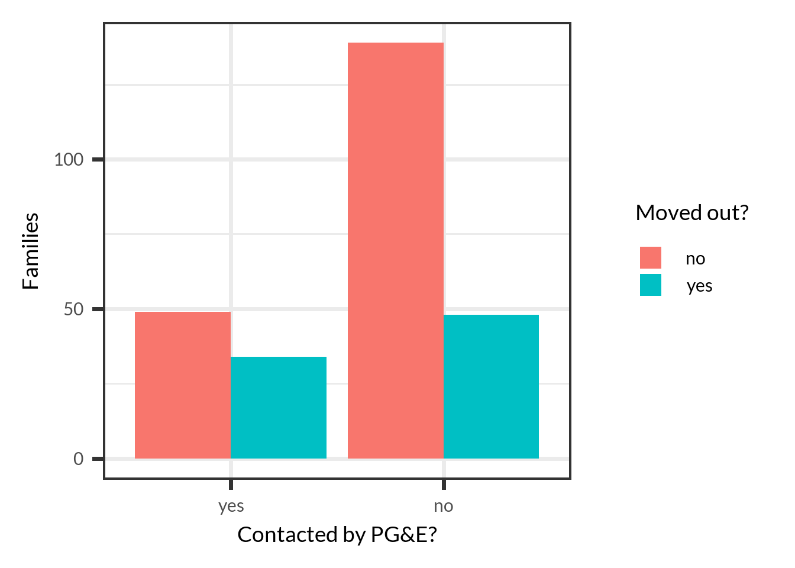
H_mod |> group_by(contacted_by_pge) |>
summarise(n = n(), pct_moved = round(100 * mean(moved_out == "yes"), 1))# A tibble: 2 × 3
contacted_by_pge n pct_moved
<fct> <int> <dbl>
1 yes 83 41
2 no 187 25.7H_mod |> group_by(in_plume) |>
summarise(n = n(), pct_contacted = round(100 * mean(contacted_by_pge == "yes"), 1))# A tibble: 2 × 3
in_plume n pct_contacted
<fct> <int> <dbl>
1 inside 115 59.1
2 outside 155 9.741% of contacted families moved out compared to 26% of the others. But look at who got contacted: 59% of families inside the plume vs only 10% outside. So contact and living in the plume are tangled together.
Question 4: does health get worse closer to the station?
H_mod |>
gf_point(health_score ~ distance_km) |>
gf_smooth(method = "lm") |>
gf_labs(
x = "Distance from the PG&E station (km)",
y = "Health score (10 = worst)",
)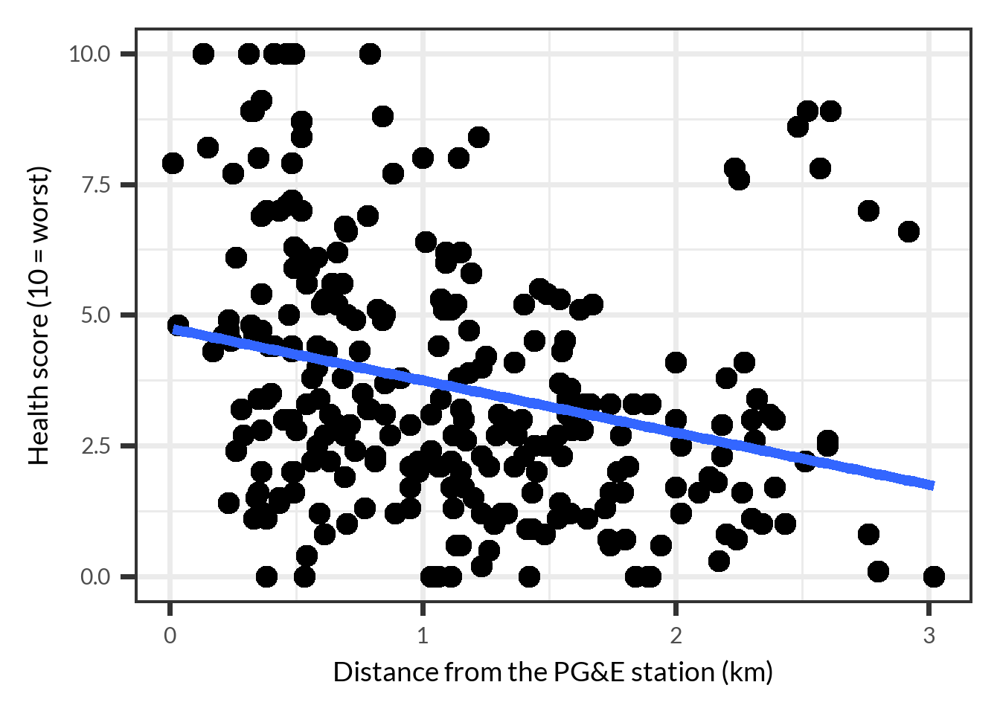
H_mod |> summarise(r = stats::cor(distance_km, health_score))# A tibble: 1 × 1
r
<dbl>
1 -0.279coef(stats::lm(health_score ~ distance_km, data = H_mod))(Intercept) distance_km
4.742115 -0.995375 The line slopes down: roughly 1 point lower for each extra km away. The correlation is about -0.28, which is weak. The dots are all over the place, with some sick families far away and some healthy ones close in.
Question 5: do the sick families sit where the plume is strongest? (the maps)
Some setup for all three maps. The PG&E station comes from the plume table, Erin gets a made-up spot, and we pick colours.
pge <- P |> filter(feature == "plant") # one row: where the PG&E station is
erin <- tibble(name = "Erin's base (made-up spot)", lon = -117.1700, lat = 34.8985)
pal_ill <- colorFactor(c("#2ca02c", "#ff9900", "#d62728"),
domain = c("none", "mild", "severe"))
pal_aff <- colorFactor(c("#d62728", "#1f77b4"),
domain = c("affected", "unaffected"))
pal_move <- colorFactor(c("#6a3d9a", "#a6cee3"), domain = c("yes", "no"))
# a text box for the pop-up of each family
H_mod <- H_mod |>
mutate(popup = paste0("<b>The ", family, " family</b><br>",
house_no, " ", street, "<br>",
"Members: ", n_members, "<br>",
"Chromium-6: ", cr6_ppb, " ppb<br>",
"Health score: ", health_score, " (", illness_level, ")<br>",
"Contacted by PG&E: ", contacted_by_pge, "<br>",
"Moved out: ", moved_out))Map 1: the plume over the families. Esri street map as the base (you can see the roads and houses), with a satellite option. The family dots go on first and the plume polygons go on top, so we can see which dots sit under the strongest zone. The polygons have interactive = FALSE so you can still click the dots underneath.
leaflet() |>
setView(lng = -117.1622, lat = 34.8920, zoom = 14) |>
addProviderTiles("Esri.WorldStreetMap", group = "Streets") |>
addProviderTiles("Esri.WorldImagery", group = "Satellite") |>
# families (dots coloured by illness)
addCircleMarkers(
data = H_mod, lng = ~lon, lat = ~lat,
radius = 5, color = "black", weight = 1,
fillColor = ~ pal_ill(illness_level), fillOpacity = 0.9,
label = ~family, popup = ~popup, group = "Families"
) |>
# plume zones on top, biggest first
addPolygons(
data = P |> filter(zone == "low"), lng = ~lon, lat = ~lat,
color = "#fed976", weight = 1, fillColor = "#fed976", fillOpacity = 0.35,
group = "Plume", options = pathOptions(interactive = FALSE)
) |>
addPolygons(
data = P |> filter(zone == "medium"), lng = ~lon, lat = ~lat,
color = "#fd8d3c", weight = 1, fillColor = "#fd8d3c", fillOpacity = 0.35,
group = "Plume", options = pathOptions(interactive = FALSE)
) |>
addPolygons(
data = P |> filter(zone == "high"), lng = ~lon, lat = ~lat,
color = "#bd0026", weight = 1, fillColor = "#bd0026", fillOpacity = 0.35,
group = "Plume", options = pathOptions(interactive = FALSE)
) |>
# the company and Erin
addMarkers(data = pge, lng = ~lon, lat = ~lat,
label = "PG&E Hinkley station",
popup = "PG&E Hinkley compressor station (where the plume starts)") |>
addMarkers(data = erin, lng = ~lon, lat = ~lat,
label = ~name, popup = ~name) |>
addLegend(position = "bottomright", pal = pal_ill,
values = c("none", "mild", "severe"), title = "Illness level") |>
addLegend(position = "bottomleft",
colors = c("#fed976", "#fd8d3c", "#bd0026"),
labels = c("low (about 20 ppb)", "medium (about 60 ppb)", "high (about 150 ppb)"),
title = "Chromium-6 in the plume", opacity = 0.6) |>
addLayersControl(baseGroups = c("Streets", "Satellite"),
overlayGroups = c("Families", "Plume"),
options = layersControlOptions(collapsed = FALSE))H_mod |> group_by(plume_zone) |>
summarise(n = n(),
pct_affected = round(100 * mean(affected == "affected"), 1),
n_moved = sum(moved_out == "yes")) |>
arrange(desc(pct_affected))# A tibble: 4 × 4
plume_zone n pct_affected n_moved
<fct> <int> <dbl> <int>
1 high 30 83.3 18
2 medium 37 70.3 14
3 low 48 62.5 13
4 outside 155 41.3 37The stronger the zone, the bigger the share of affected families: 83% in high, 70% in medium, 63% in low, and 41% outside the plume. The red (severe) dots pile up near the station: 16 of the 30 families in the high zone are severe (53%), compared to 13 of 155 outside the plume (8%). But there are still red dots outside the plume and green ones inside it.
Map 2: circles around the station. addCircles() takes its radius in metres (unlike addCircleMarkers(), which is in pixels). The rings are the same 0.5 km bands as the bar chart, with the affected share of each band on hover. The dots are bigger for sicker families.
ring_pct <- H_mod |> group_by(distance_band) |>
summarise(pct_affected = round(100 * mean(affected == "affected")))
rings <- tibble(radius_m = c(1500, 1000, 500), # biggest first, so we can hover the small ones
lon = pge$lon, lat = pge$lat,
label = paste0(rev(ring_pct$distance_band[1:3]), ": ",
rev(ring_pct$pct_affected[1:3]), "% affected"))
leaflet() |>
setView(lng = -117.1622, lat = 34.8920, zoom = 14) |>
addProviderTiles("Esri.WorldStreetMap") |>
addCircles(
data = rings, lng = ~lon, lat = ~lat, radius = ~radius_m,
color = "black", weight = 2, dashArray = "6",
fillColor = "red", fillOpacity = 0.05, label = ~label
) |>
addCircleMarkers(
data = H_mod, lng = ~lon, lat = ~lat,
radius = ~ 2 + health_score, # pixels: bigger = sicker
color = "black", weight = 1,
fillColor = ~ pal_aff(affected), fillOpacity = 0.7,
label = ~family, popup = ~popup
) |>
addMarkers(data = pge, lng = ~lon, lat = ~lat, label = "PG&E Hinkley station") |>
addLegend(position = "bottomright", pal = pal_aff,
values = c("affected", "unaffected"),
title = "Status (dot size = health score)")Inside the first 1 km, most dots are red (affected) and big. Past the 1 km ring, only about 4 in 10 families are affected (43% and 42%), which matches the bar chart.
Map 3: who moved out and who PG&E contacted. Purple dots are families that moved out, light blue ones stayed, and a gold outline means PG&E contacted them. The plume outline is just for reference.
leaflet() |>
setView(lng = -117.1622, lat = 34.8920, zoom = 14) |>
addProviderTiles("Esri.WorldStreetMap") |>
addPolygons(
data = P |> filter(zone == "low"), lng = ~lon, lat = ~lat,
color = "#7a0177", weight = 2, fill = FALSE,
options = pathOptions(interactive = FALSE)
) |>
addCircleMarkers(
data = H_mod, lng = ~lon, lat = ~lat,
radius = 5,
color = ~ if_else(contacted_by_pge == "yes", "gold", "black"),
weight = ~ if_else(contacted_by_pge == "yes", 3, 1),
fillColor = ~ pal_move(moved_out), fillOpacity = 0.9,
label = ~family, popup = ~popup
) |>
addMarkers(data = pge, lng = ~lon, lat = ~lat, label = "PG&E Hinkley station") |>
addLegend(position = "bottomright", pal = pal_move,
values = c("yes", "no"), title = "Moved out?") |>
addLegend(position = "bottomleft", colors = "gold",
labels = "Gold outline = contacted by PG&E")The purple dots (moved out) are thickest near the station, and the gold outlines (contacted) mostly sit inside the plume outline. Contacted families are 31% of everyone, but 59% of the families inside the plume.
6. Say
- Closer to the station means more affected families: 71% in the 0 to 0.5 km ring, about 42% beyond 1 km.
- Health scores are worse inside the plume (4.57 vs 2.90 on average), and the t-test says that gap is unlikely to be chance.
- The stronger the plume zone, the bigger the share of affected families (83% in
high, 41% outside the plume). - Most families that moved out lived within 1 km of the station.
- Contacted families moved out more often (41% vs 26%), but PG&E mostly contacted families inside the plume, so the two are interlinked.
- Distance and health are linked, but weakly.
7. Limit
- We can’t say the chromium-6 caused the illness. No dates, no age, no smoking, nothing about other causes.
- We only know whether a family moved, not why, and not when. The map shows where they used to live.
- The t-test only compares averages for two groups. It doesn’t tell us what’s driving the difference.
- Q3 is just counts, with no test, and contact is tangled up with living in the plume.
Hinkley wrap-up
So what did Erin’s Map tell us? Families closer to the PG&E station are more likely to be sick, and the families inside the plume score worse on health than the ones outside. The t-test backs that up: about 1.7 points worse on average, and that’s not just luck. On the map, the strongest plume zone is also where most of the sick families live, and most of the families that left came from near the station too.
The pattern isn’t a clean line, because there are sick families far from the plume and healthy ones right next to it. We can say “closer goes with sicker”, not “the plume made them sick”. Real Erin had to prove the second part with a lot more work than a t-test and three maps.
# sessionInfo()Conclusion
The spine so far: Bodies carry risk differently by sex (A), class talks to where people live and how much they smoke more than to heart disease directly (B), richer Asian countries tend to live longer but wealth and population are really lopsided on the map (C), and in our made-up Hinkley data, families closer to the PG&E plume are sicker and more of them left (D). Smoking keeps refusing to behave the way we predicted in both A and B.
The questions we will defend in ninety seconds:
- Panel A: Do smokers and non-smokers carry cholesterol differently, and why do male smokers look healthier?
- Panel B: Does smoking lower your risk of CVD? (No: ex-smokers have the most CVD, and they’re also the oldest.)
- Panel C: Does life expectancy go up with GDP per capita across Asia? (Roughly yes, but China, India and a few rich countries decide what the maps look like.)
- Panel D: Are families closer to the PG&E station sicker, and did they leave more? (Yes in our made-up data: about 71% of families within 0.5 km are affected vs about 42% beyond 1 km, and inside-plume families score about 1.7 points worse on the t-test. That’s still not proof the plume caused it.)
What we will not claim: that smoking is good for cholesterol or the heart, that social class causes CVD, that anything here causes heart disease, that GDP makes people live longer, or that the plume made the Hinkley families sick (the data is made up and has no dates, ages or other causes).
Limits: one snapshot each, smoking is yes / no only in A and in loose groups in B, only 36 female smokers in A, age tangled up with smoking in B,
carstairdescribes the area not the person, unknown sampling. In C, country averages hide differences inside a country and a couple of places may drop off the map because their names don’t match. In D, the data is made up, “affected” and the plume zones are our own cut-offs, and we only know if a family moved, not why.